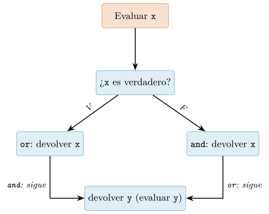
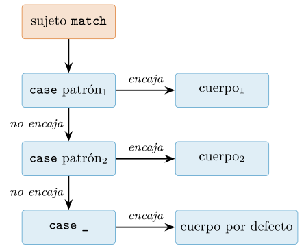
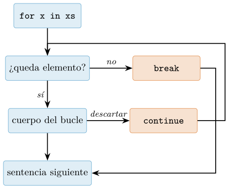
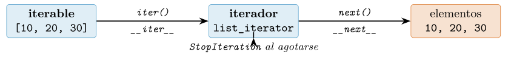
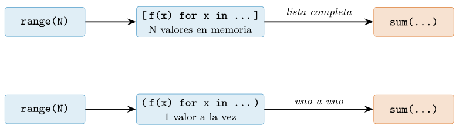
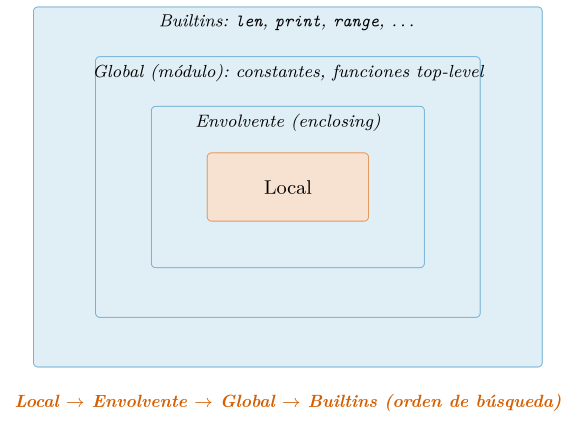
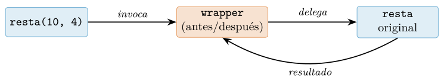
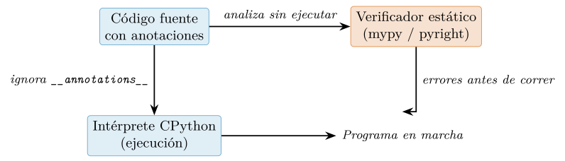
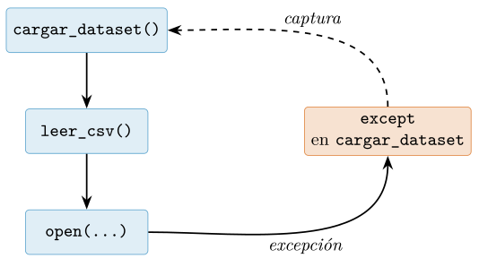
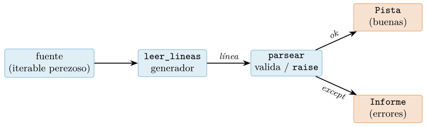

Capítulo 3. Control de flujo, funciones y manejo de errores
▶ Ejecutar este capítulo en Binder
La primera vez que se abre, Binder construye el entorno en la nube (unos 10-20 min); verás una pantalla de progreso. Después queda en caché y abre en segundos. Si parece que no responde, espera a que termine de construirse o vuelve a intentarlo.
Con el modelo de objetos del capítulo anterior asimilado, el control de flujo deja de ser una lista de sintaxis para convertirse en lo que de verdad es: la manera de expresar decisiones, repeticiones y abstracciones sobre datos. Este capítulo reúne las tres herramientas que estructuran cualquier programa —decidir, repetir, encapsular— y las lleva hasta el terreno avanzado que la ciencia de datos necesita: la iteración perezosa que permite procesar ficheros que no caben en memoria, los cierres y decoradores que sostienen el estilo de pandas y polars, las anotaciones de tipo que documentan contratos, y la disciplina de fallar de forma útil con excepciones. Es la última parada en los fundamentos del lenguaje antes de entrar, en la Parte II, en las estructuras de datos (cap. 4) y su diseño.
Condicionales y el concepto de verdad
El control de flujo condicional es la herramienta con la que un programa deja de ser una secuencia rígida de instrucciones para adaptar su comportamiento a los datos. En ciencia de datos, donde rara vez conocemos de antemano la forma exacta de una entrada —un valor ausente, una lista vacía, una cadena mal formateada—, dominar los condicionales y, sobre todo, la noción de verdad que Python asocia a cada objeto resulta imprescindible. Esta sección recapitula y profundiza las reglas de veracidad introducidas en el cap. 2, y las conecta con la sintaxis de if/elif/else, las comparaciones encadenadas, la expresión condicional y la evaluación en cortocircuito.
La sentencia if: indentación como sintaxis
A diferencia de lenguajes como C, Java o JavaScript, que delimitan los bloques con llaves, Python emplea la indentación (el sangrado) como parte de su gramática. Los dos puntos al final de la línea de cabecera abren un bloque, y todo lo que pertenece a ese bloque debe estar sangrado con el mismo número de espacios. No se trata de una convención estética: es sintaxis obligatoria, y una indentación incorrecta produce un IndentationError o, peor, un programa sintácticamente válido pero semánticamente erróneo. La guía de estilo oficial recomienda cuatro espacios por nivel y desaconseja mezclar espacios y tabuladores (Rossum et al. 2001).
edad = 20
if edad < 18:
categoria = "menor"
descuento = 0.5
elif edad < 65: # solo se evalua si el if anterior fue falso
categoria = "adulto"
descuento = 0.0
else:
categoria = "senior"
descuento = 0.3
print(categoria, descuento) # adulto 0.0La cláusula elif (contracción de else if) permite encadenar varias condiciones mutuamente excluyentes sin anidar bloques. Python evalúa las condiciones de arriba abajo y ejecuta el primer bloque cuya condición sea verdadera; las restantes ni siquiera se examinan. La cláusula else final, opcional, captura todos los casos no cubiertos. Este orden de evaluación tiene consecuencias prácticas: si una condición más general precede a otra más específica, la segunda nunca se alcanzará.
# Error logico: el orden de las condiciones importa
temp = 5
if temp < 40:
estado = "moderado"
elif temp < 10: # inalcanzable: 5 < 40 ya fue verdadero
estado = "frio"
print(estado) # "moderado", probablemente no deseadoReglas de veracidad: el protocolo __bool__
Cuando Python evalúa la condición de un if, no exige un valor de tipo bool: acepta cualquier objeto y lo interpreta como verdadero o falso según su veracidad (truthiness). El modelo de datos define este comportamiento mediante el método especial __bool__; si un objeto no lo implementa, Python recurre a __len__, considerando falso todo aquello cuya longitud sea cero (Python Software Foundation, s. f.). Solo si ninguno de los dos métodos existe, el objeto se considera verdadero por defecto. Esta jerarquía —__bool__ primero, __len__ después— es la clave para entender por qué contenedores vacíos y ceros se comportan como falsos.
Recapitulando lo visto en el cap. 2, los valores falsos (falsy) predefinidos son exactamente estos:
| Categoría | Valor | Mecanismo |
|---|---|---|
| Constante nula | None |
__bool__ |
| Booleano falso | False |
__bool__ |
| Entero cero | 0 |
__bool__ |
| Flotante cero | 0.0 |
__bool__ |
| Complejo cero | 0j |
__bool__ |
| Cadena vacía | "" |
__len__ |
| Lista vacía | [] |
__len__ |
| Tupla vacía | () |
__len__ |
| Diccionario vacío | {} |
__len__ |
| Conjunto vacío | set() |
__len__ |
La consecuencia práctica es idiomática: en lugar de escribir if len(lista) > 0: o if valor != None:, la comunidad de Python prefiere la forma directa que aprovecha la veracidad del objeto (Ramalho 2022).
registros = [] # p.ej. resultado de una consulta [sintetico]
# Idiomatico: aprovecha la veracidad del contenedor
if registros:
print(f"Procesando {len(registros)} registros")
else:
print("Sin datos") # se ejecuta: [] es falso
# No idiomatico y mas fragil
if len(registros) != 0:
...Existe, no obstante, una advertencia imprescindible para la ciencia de datos. La veracidad se define objeto a objeto, pero muchas estructuras del ecosistema numérico —los arrays de NumPy o las series de pandas— rechazan deliberadamente ser convertidas a un único booleano cuando contienen más de un elemento, para evitar ambigüedades (Harris et al. 2020). El código if np.array([1, 2, 3]): lanza un ValueError con el mensaje «The truth value of an array with more than one element is ambiguous». En estos casos hay que ser explícito y usar .any(), .all() o .size.
import numpy as np
a = np.array([0, 0, 3])
# if a: # ValueError: ambiguo
if a.any(): # True si algun elemento es verdadero
print("Hay al menos un valor no nulo")
if a.size == 0: # forma correcta de comprobar "vacio"
print("Array vacio")Comparaciones y operadores de identidad: == frente a is
Las condiciones suelen construirse con operadores de comparación (<, <=, >, >=, ==, !=), que devuelven un bool. Es esencial distinguirlos de los operadores de identidad is e is not, recapitulando la distinción del cap. 2. El operador == compara valores (invoca __eq__); el operador is compara identidad, es decir, si dos nombres apuntan al mismo objeto en memoria (Python Software Foundation, s. f.).
a = [1, 2, 3]
b = [1, 2, 3]
c = a
print(a == b) # True: mismo contenido
print(a is b) # False: objetos distintos en memoria
print(a is c) # True: mismo objeto
x = None
print(x is None) # True: forma canonica y recomendada
print(x == None) # funciona, pero desaconsejado por PEP 8La regla práctica, consagrada por la guía de estilo, es usar is exclusivamente para comparar con los singletons None, True y False, y reservar == para el resto (Rossum et al. 2001). Comparar enteros o cadenas con is es una fuente clásica de errores sutiles: aunque a is b pueda devolver True para enteros pequeños o cadenas cortas por el mecanismo interno de caché del intérprete (interning), este comportamiento es un detalle de implementación y no debe usarse jamás como garantía (Ramalho 2022).
Comparaciones encadenadas
Python permite encadenar comparaciones de forma que reproducen la notación matemática habitual. La expresión 18 <= x < 65 es válida y significa exactamente lo que la intuición sugiere: verdadera si x está en el intervalo. Lo notable, y lo que distingue a Python de la mayoría de lenguajes, es que la subexpresión central x se evalúa una sola vez, y el resultado global equivale a (18 <= x) and (x < 65) sin volver a calcular x (Python Software Foundation 2026c).
def clasificar_edad(x):
if 18 <= x < 65: # x se evalua una sola vez
return "adulto en edad laboral"
return "fuera de rango laboral"
# Equivalencia semantica
# 18 <= x < 65 <=> (18 <= x) and (x < 65)
# pero x se evalua UNA vez
print(clasificar_edad(30)) # adulto en edad laboralEsta semántica es especialmente valiosa cuando el término central es una llamada costosa o con efectos secundarios. En 0 < siguiente() <= limite, la función siguiente() se invoca solo una vez, algo que la traducción manual ingenua 0 < siguiente() and siguiente() <= limite rompería, llamándola dos veces. Las comparaciones pueden encadenarse arbitrariamente (a < b <= c == d), aunque encadenamientos largos suelen perjudicar la legibilidad y conviene moderarlos.
La expresión condicional (operador ternario)
Cuando la finalidad de un if/else es simplemente seleccionar uno de dos valores, Python ofrece una expresión condicional, a menudo llamada operador ternario. Su sintaxis, deliberadamente legible, coloca la condición en el centro: a if cond else b. Al ser una expresión y no una sentencia, puede aparecer en cualquier lugar donde se espere un valor: dentro de una asignación, de una llamada a función o de una comprensión de listas.
def normalizar(nombre):
# Devuelve el nombre en minusculas, o "anonimo" si esta vacio
return nombre.strip().lower() if nombre else "anonimo"
print(normalizar(" Ada ")) # ada
print(normalizar("")) # anonimo: "" es falso
# Uso dentro de una comprension [sintetico]
temps = [22.0, -1.5, 8.3, None]
etiquetas = ["bajo cero" if (t is not None and t < 0) else "positivo"
for t in temps if t is not None]
print(etiquetas) # ['positivo', 'bajo cero', 'positivo']La expresión condicional evalúa primero cond; si es verdadera, evalúa y devuelve a sin llegar a evaluar b, y viceversa. Este cortocircuito la hace segura incluso cuando una de las ramas solo tiene sentido bajo la condición dada, por ejemplo total / n if n else 0.0, que evita la división por cero. Conviene, sin embargo, no abusar del anidamiento: expresiones como a if p else (b if q else c) pierden legibilidad con rapidez y, más allá de un nivel, suele preferirse un bloque if/elif explícito o una sentencia match.
Evaluación en cortocircuito de and y or
Los operadores lógicos and y or de Python poseen dos propiedades que los hacen mucho más versátiles que sus homólogos de otros lenguajes. La primera es la evaluación en cortocircuito: en x and y, si x es falso, y ni siquiera se evalúa, porque el resultado ya está determinado; simétricamente, en x or y, si x es verdadero, y no se evalúa. La segunda es que estos operadores no devuelven un bool, sino el último operando evaluado, conservando su valor y su tipo originales (Python Software Foundation 2026c; Ramalho 2022).
| Expresión | Condición | Devuelve |
|---|---|---|
x and y |
x falso |
x (sin evaluar y) |
x and y |
x verdadero |
y |
x or y |
x verdadero |
x (sin evaluar y) |
x or y |
x falso |
y |
Estas dos propiedades combinadas habilitan patrones idiomáticos. El cortocircuito de and sirve como guarda: en usuario and usuario.get("activo"), la segunda parte solo se evalúa si usuario no es None, evitando un AttributeError. El cortocircuito de or proporciona valores por defecto: nombre or "anonimo" devuelve nombre si es una cadena no vacía, y "anonimo" en caso contrario.
def ciudad_de(usuario):
# Guarda con 'and': evita indexar None; defecto con 'or'
direccion = usuario and usuario.get("direccion")
return (direccion or {}).get("ciudad", "desconocida")
u = {"direccion": {"ciudad": "Barcelona"}}
print(ciudad_de(u)) # Barcelona
print(ciudad_de(None)) # desconocida
print(ciudad_de({})) # desconocida: {} es falso -> or {}Hay que aplicar el idioma or con cuidado cuando cero, cadena vacía o False sean valores legítimos: cantidad or 10 sustituiría un 0 intencionado por 10. En esos casos, la comprobación explícita cantidad if cantidad is not None else 10 es más segura, o bien, desde Python 3.8, el operador walrus y los patrones que veremos más adelante. La Figura 3.1 resume el flujo de decisión.

x, cada operador puede terminar sin llegar a y: or corta cuando x es verdadero, and cuando x es falso.Emparejamiento estructural con match/case
A partir de Python 3.10 el lenguaje incorpora una construcción de control de flujo genuinamente nueva: el emparejamiento estructural de patrones (structural pattern matching), expresado mediante las palabras clave match y case. Su especificación formal es la (Bucher y Rossum 2020), acompañada de un tutorial didáctico en la (Moisset 2020). La idea central es sencilla de enunciar y poderosa en la práctica: en lugar de preguntar repetidamente por el valor o la forma de un objeto con una cadena de condicionales, describimos directamente la forma que esperamos y dejamos que el intérprete verifique si el objeto encaja en ella y, de paso, extraiga las partes que nos interesan en variables. Esa combinación de comprobación y desestructuración simultáneas es lo que distingue a match de cualquier condicional ordinario.
Conviene fijar desde el principio la sintaxis general. Un bloque match evalúa una expresión —el sujeto— y la confronta contra una secuencia ordenada de cláusulas case, cada una encabezada por un patrón. Se ejecuta el cuerpo de la primera cláusula cuyo patrón encaje con el sujeto, y solo esa; no hay caída en cascada de una cláusula a la siguiente. Si ninguna encaja, el bloque no hace nada (no es un error).
def clasificar(punto):
match punto:
case (0, 0):
return "origen"
case (x, 0):
return f"sobre el eje X en x={x}"
case (0, y):
return f"sobre el eje Y en y={y}"
case (x, y):
return f"punto libre ({x}, {y})"
case _:
return "no es un par de coordenadas"Este primer ejemplo ya exhibe tres mecanismos que analizaremos en detalle: los patrones literales ((0, 0) exige que ambas componentes sean exactamente cero), la captura de variables (x e y no comparan contra nada: vinculan el valor correspondiente a un nombre nuevo) y el patrón comodín _, que encaja con cualquier cosa sin capturar. La lectura es casi declarativa: enunciamos las formas posibles de un punto y qué hacer con cada una.
El catálogo de patrones
El poder de match reside en su vocabulario de patrones, que se pueden anidar libremente unos dentro de otros. Los repasamos ordenadamente.
Patrones literales y de valor.
Un literal (0, "activo", None, True) encaja si el sujeto es igual a él. La comparación se realiza con ==, salvo para los tres singletons None, True y False, que se comparan con is. También es posible comparar contra el valor de una constante nombrada, pero —y esto es fuente frecuente de confusión— solo si el nombre aparece cualificado por un punto, como Color.ROJO o math.pi. Un nombre desnudo nunca es un patrón de valor: siempre es una captura.
Patrones de captura y comodín.
Un nombre a secas, como x, encaja con cualquier valor y lo vincula a ese nombre para el cuerpo del case. El comodín _ se comporta igual pero no vincula nada; es el caso «por defecto» idiomático y puede aparecer varias veces en un mismo patrón. Es importante entender que la vinculación ocurre aunque el patrón global acabe fallando más adelante, por lo que no debe confiarse en el estado de una variable capturada si el case no llegó a ejecutarse.
Patrones de secuencia.
Un patrón como (a, b, c) o [a, b, c] —los paréntesis y los corchetes son intercambiables aquí— encaja con cualquier secuencia (una lista, una tupla, el resultado de un split...) de exactamente esa longitud, desestructurando cada elemento. Crucialmente, las cadenas de texto y los bytes no se tratan como secuencias a estos efectos, para evitar que "abc" encaje inadvertidamente con (a, b, c). Como en el desempaquetado de asignaciones, se admite un elemento *resto para capturar un número variable de elementos:
def procesar_comando(tokens):
match tokens:
case ["mover", direccion]:
return f"mover hacia {direccion}"
case ["mover", direccion, int(pasos)]:
return f"mover {pasos} pasos hacia {direccion}"
case ["repetir", *acciones]:
return f"repetir {len(acciones)} accion(es)"
case []:
return "comando vacio"
case _:
return "comando no reconocido"Nótese el patrón int(pasos): es un patrón de clase usado como comprobación de tipo. Encaja solo si el elemento es un int, y en tal caso lo vincula a pasos. Así, ["mover", "norte", 3] encaja con la segunda cláusula, pero ["mover", "norte", "tres"] no.
Patrones de mapeo.
Un patrón como {"clave": v} encaja con cualquier mapeo (típicamente un dict) que contenga al menos esas claves, ignorando las demás. Esta semántica de subconjunto es deliberada y muy conveniente para procesar respuestas de API, donde suelen llegar campos adicionales que no nos importan. Se puede capturar el resto con **resto. Las claves del patrón deben ser literales o valores cualificados por punto, no capturas.
Patrones de clase.
La forma NombreClase(...) verifica que el sujeto sea una instancia de esa clase (con isinstance) y luego empareja sus atributos. Los argumentos posicionales, como en Punto(x, y), se asocian a atributos según la secuencia definida en el atributo especial __match_args__ de la clase —que las @dataclass generan automáticamente—; los argumentos por palabra clave, como Punto(x=0), se emparejan contra el atributo homónimo. Combinar clases con @dataclass produce un código de una expresividad notable, como veremos en §3.2.2.
Guardas.
A cualquier case se le puede añadir una guarda: una condición if que se evalúa después de que el patrón haya encajado y que puede usar las variables recién capturadas. Si la guarda resulta falsa, el emparejamiento continúa con el siguiente case. La guarda permite expresar restricciones que el sistema de patrones, puramente estructural, no puede capturar por sí solo (comparaciones de magnitud, relaciones entre componentes, llamadas a funciones).
Patrones OR y patrones as.
La barra vertical combina alternativas: case 401 | 403 | 407: encaja si el sujeto es cualquiera de esos valores. Todas las ramas de un OR deben capturar exactamente el mismo conjunto de nombres. Finalmente, el patrón subpatron as nombre encaja según subpatron y, si tiene éxito, vincula el objeto completo a nombre, y resulta útil para conservar una referencia al valor entero además de a sus partes.
| Patrón | Ejemplo | Encaja cuando |
|---|---|---|
| Literal | 200 |
el sujeto es igual (==) al literal |
| Singleton | None |
el sujeto es (is) el singleton |
| Valor | Color.ROJO |
el sujeto es igual a la constante cualificada |
| Captura | x |
siempre; vincula el sujeto a x |
| Comodín | _ |
siempre; no vincula nada |
| Secuencia | [a, *r] |
el sujeto es una secuencia (no str) |
| Mapeo | {"k": v} |
el sujeto contiene esas claves |
| Clase | P(x, y) |
isinstance y encajan sus atributos |
| OR | 403 | 404 |
encaja alguna alternativa |
| Como | [x] as l |
encaja el subpatrón; vincula el todo a l |
| Guarda | case x if x > 0 |
encaja el patrón y la condición es cierta |
Desestructurar datos con forma
El escenario donde match brilla es el procesamiento de datos semiestructurados: respuestas de API en formato JSON, mensajes de un protocolo, árboles de sintaxis, registros heterogéneos. En ciencia de datos estas formas aparecen constantemente al ingerir datos externos antes de normalizarlos a un DataFrame (cap. 7). Consideremos la respuesta [sintética] de una API de música, cuya estructura varía según haya éxito o error:
def interpretar_respuesta(resp):
match resp:
case {"estado": "ok", "pista": {"titulo": t, "duracion_ms": ms}}:
return f"{t} ({ms / 1000:.0f}s)"
case {"estado": "ok", "lista": {"nombre": n, "total": k}}:
return f"lista '{n}' con {k} pistas"
case {"estado": "error", "codigo": c, "mensaje": msg}:
raise RuntimeError(f"error {c}: {msg}")
case {"estado": estado}:
raise ValueError(f"estado desconocido: {estado!r}")
case _:
raise TypeError("la respuesta no es un objeto valido")Cada cláusula lee como una descripción de la forma esperada. El anidamiento de un patrón de mapeo dentro de otro ("pista": {...}) desciende por la estructura sin una sola línea de acceso por corchetes ni comprobación de existencia de claves. El formateo de la duración a segundos vive en la propia cláusula que la reconoce. Compárese mentalmente con la versión equivalente a base de if "estado" in resp and resp["estado"] == "ok" and ...: el match elimina el ruido y hace imposible olvidar un in defensivo, porque un mapeo al que le falta una clave simplemente no encaja.
La combinación con clases y guardas es igualmente expresiva. Modelemos eventos de un flujo de reproducciones:
from dataclasses import dataclass
@dataclass
class Reproduccion:
pista: str
segundos: float
@dataclass
class Fallo:
pista: str
codigo: int
def reaccionar(evento):
match evento:
case Reproduccion(pista=p, segundos=s) if s > 100.0:
return f"ESCUCHA COMPLETA de {p}: {s}"
case Reproduccion(pista=p, segundos=s):
return f"{p} saltada: {s}"
case Fallo(pista=p, codigo=503 | 504):
return f"{p} temporalmente no disponible"
case Fallo(pista=p, codigo=c):
return f"{p} fallo permanente ({c})"Aquí conviven el patrón de clase (con emparejamiento por palabra clave de atributos generados por @dataclass), la guarda if s > 100.0 —que distingue una escucha completa de una pista saltada sin necesidad de un case adicional— y un patrón OR anidado dentro del patrón de clase (codigo=503 | 504). El resultado despacha sobre el tipo y el contenido del evento a la vez, un idioma que en versiones anteriores de Python requería una torre de isinstance entrelazada con accesos a atributos.
Cuándo usarlo frente a una cadena de if
El emparejamiento estructural no reemplaza al condicional ordinario; lo complementa. Como regla práctica, match aporta claridad cuando concurren dos condiciones: (1) se despacha sobre un mismo sujeto contra varias alternativas, y (2) esas alternativas se distinguen por la forma del dato —su tipo, su estructura, sus componentes— y no solo por un valor escalar. Si simplemente se comprueban condiciones lógicas heterogéneas sobre variables distintas (if tempo > 140 and energy > 0.8:), una cadena de if/elif sigue siendo más directa y legible, y forzar un match solo añade ceremonia. Recíprocamente, cuando el código degenera en desempaquetar tuplas, comprobar tipos con isinstance y hurgar en diccionarios dentro de cada rama, ese es justamente el olor que delata la oportunidad de un match.

match/case. Flujo de evaluación. Los patrones se prueban de arriba abajo; se ejecuta el cuerpo del primero que encaja y solo ese. Sin cláusula _, un sujeto que no encaje en ninguna parte deja el bloque sin efecto.Advertencia: no es el switch de C
Es tentador, sobre todo para quien llega de C, Java o JavaScript, leer match/case como un switch/case vitaminado. Esa analogía es engañosa y conviene desactivarla explícitamente. Un switch clásico compara un valor contra constantes por igualdad y —en su forma tradicional— cae en cascada de una etiqueta a la siguiente salvo que un break lo impida. El match de Python no hace ninguna de las dos cosas: no compara solo por igualdad sino que empareja estructura, y nunca cae en cascada; ejecutado un cuerpo, el bloque termina. No existe ni es necesario un break.
La trampa más peligrosa deriva de la regla de captura enunciada en §3.2.1: un nombre desnudo en un patrón es siempre una captura, no una comparación. El siguiente código no hace lo que un programador de C esperaría:
ROJO, VERDE = 1, 2
def nombre_color(codigo):
match codigo:
case ROJO: # NO compara con 1: captura en 'ROJO'
return "cualquier cosa cae aqui"
case VERDE: # inalcanzable
return "nunca se llega"El patrón case ROJO: no compara codigo contra el valor 1: reescribe la variable ROJO con el valor del sujeto y encaja siempre, dejando la segunda cláusula inalcanzable (algunos analizadores estáticos avisan de ello). Para comparar contra constantes hay que cualificar el nombre con un punto, y en la práctica significa envolver las constantes en un enum.Enum o en un espacio de nombres:
from enum import Enum
class Color(Enum):
ROJO = 1
VERDE = 2
def nombre_color(codigo):
match codigo:
case Color.ROJO: # patron de valor: compara de verdad
return "rojo"
case Color.VERDE:
return "verde"
case _:
return "desconocido"Como cierre operativo, el emparejamiento estructural es una de las adiciones más significativas al repertorio de control de flujo de Python en su historia reciente. Empleado con criterio —despachando sobre la forma de datos semiestructurados, no como sustituto cosmético de un if— reduce drásticamente el código defensivo de validación y desestructuración, y acerca la implementación a la descripción de los datos que procesa. El lector interesado en los detalles finos de la gramática de patrones y sus reglas de vinculación encontrará la referencia exhaustiva en la (Bucher y Rossum 2020) y una introducción guiada y llena de ejemplos en la (Moisset 2020).
Bucles: while, for y control del flujo
La iteración es el mecanismo por el que un programa repite trabajo: procesar cada registro de un fichero, refinar una estimación hasta que converja, o recorrer los píxeles de una imagen. Python ofrece dos construcciones de bucle, while y for, que responden a preguntas distintas. El while pregunta «¿debo seguir?» y repite mientras una condición sea verdadera; el for pregunta «¿qué elementos hay?» y recorre un iterable de principio a fin. Elegir bien entre ambos, y sobre todo escribir el for de forma idiomática, es una de las diferencias más visibles entre código de principiante y código de un profesional. En esta sección desarrollamos ambas construcciones, las herramientas del núcleo del lenguaje que las acompañan (range, enumerate, zip, reversed, sorted), el control fino del flujo con break y continue, la poco conocida cláusula else de los bucles, y una regla de oro específica de la ciencia de datos: cuando el bucle recorre millones de números, casi siempre es un error de diseño.
while: repetir mientras una condición se cumpla
El bucle while evalúa una condición booleana antes de cada iteración; si es verdadera ejecuta el cuerpo, y vuelve a evaluar. Su uso natural es aquel en el que no conocemos de antemano el número de repeticiones, sino que dependemos de un criterio dinámico: convergencia numérica, lectura hasta agotar una fuente, o espera de un evento externo.
# Método de Newton para la raíz cuadrada de 2 [sintético]
# Iteramos hasta que el cambio relativo sea despreciable.
x = 1.0 # estimación inicial
objetivo = 2.0
tolerancia = 1e-15
while abs(x * x - objetivo) > tolerancia:
x = 0.5 * (x + objetivo / x) # actualización de Newton
print(x) # 1.4142135623730951Aquí el número de iteraciones depende de la aritmética y no podría fijarse a priori, de modo que el while es la construcción adecuada. Dos precauciones son obligatorias. La primera es garantizar que la condición progresa hacia False: si el cuerpo no modifica ninguna variable de la condición, el bucle no termina nunca. La segunda, en cálculos numéricos, es no confiar exclusivamente en la igualdad exacta de flotantes; por eso comparamos contra una tolerancia y no contra cero. Un patrón defensivo habitual añade un tope máximo de iteraciones para evitar bucles infinitos ante datos patológicos.
# Patrón defensivo: tope de iteraciones + criterio de parada
max_iter = 100
for _ in range(max_iter): # cota superior dura
nuevo = 0.5 * (x + objetivo / x)
if abs(nuevo - x) < tolerancia:
x = nuevo
break # convergió antes del tope
x = nuevo
else:
raise RuntimeError("no convergió en max_iter iteraciones")Obsérvese que hemos reescrito el mismo cálculo con un for sobre range más un break, y hemos aprovechado la cláusula else del bucle (que detallamos en §3.3.4) para detectar el caso de no convergencia. Este idioma —cota dura con for, salida temprana con break, y else para el fracaso— es preferible a un while True con un contador manual, porque hace la cota explícita y elimina la variable de recuento.
for: recorrer un iterable
El for de Python no es el bucle contado de C o Java. No existe una variable de índice que se incremente; el for recorre directamente los elementos de cualquier objeto iterable —listas, tuplas, cadenas, diccionarios, conjuntos, ficheros, generadores— apoyándose en el protocolo de iteración del modelo de datos del lenguaje (Python Software Foundation, s. f.). Internamente, for x in obj obtiene un iterador con iter(obj) y solicita elementos con next(...) hasta que se agota. Esta abstracción, que estudiamos en profundidad al hablar de iteradores y generadores (cap. 4), es la razón por la que el mismo for sirve para una lista en memoria y para un fichero de terabytes leído línea a línea.
range: la secuencia perezosa de enteros
Cuando de verdad necesitamos una progresión de enteros —por ejemplo, repetir algo \(n\) veces— la herramienta es range. range(inicio, fin, paso) representa la secuencia aritmética \([\texttt{inicio}, \texttt{fin})\), con el extremo superior excluido, y no materializa una lista: es un objeto perezoso que produce cada entero bajo demanda, de modo que range(10**9) ocupa unos pocos bytes.
list(range(5)) # [0, 1, 2, 3, 4] fin excluido
list(range(2, 8)) # [2, 3, 4, 5, 6, 7]
list(range(0, 10, 2)) # [0, 2, 4, 6, 8] paso 2
list(range(5, 0, -1)) # [5, 4, 3, 2, 1] paso negativoEl uso legítimo de range es generar índices o repeticiones. El uso ilegítimo, y desgraciadamente frecuente, es emplearlo para recorrer una colección por posición, como veremos a continuación.
La forma idiomática: iterar sobre elementos, no sobre índices
Quien llega de otros lenguajes suele escribir for i in range(len(xs)) y luego indexar xs[i]. En Python es un antipatrón: es más largo, más lento, más propenso a errores de índice y oculta la intención. Ramalho (2022) insiste en que el for debe hablar de los elementos, no de sus posiciones.
tempos = [120.0, 95.0, 140.0, 128.0] # [sintético], en BPM
# ANTIPATRÓN: indexación manual
for i in range(len(tempos)):
print(tempos[i])
# IDIOMÁTICO: iterar sobre los elementos
for t in tempos:
print(t)Cuando además del elemento se necesita su posición, la respuesta no es reintroducir un contador manual, sino enumerate, que produce pares (indice, elemento). Su parámetro start permite numerar desde donde convenga (por ejemplo, desde 1 para presentación humana) sin aritmética adicional.
for i, t in enumerate(tempos):
print(f"posición {i}: {t}")
# start=1 para numerar de forma natural en un informe
for n, t in enumerate(tempos, start=1):
print(f"{n}.ª pista: {t} BPM")Si hay que recorrer varias secuencias en paralelo, la herramienta es zip, que empareja el primer elemento de cada iterable, luego el segundo, y así sucesivamente. zip se detiene con la secuencia más corta; para exigir que todas tengan la misma longitud (y detectar así datos mal alineados), Python 3.10 introdujo zip(..., strict=True), que lanza ValueError si difieren. Slatkin (2020) recomienda enumerate y zip como sustitutos por defecto de la indexación manual.
generos = ["pop", "rock", "jazz"]
tempos = [120.0, 95.0, 140.0]
popularidades = [55, 60, 48]
for nombre, t, p in zip(generos, tempos, popularidades):
print(f"{nombre}: {t} BPM, {p} popularidad")
# strict=True detecta desalineación (longitudes distintas)
try:
list(zip(generos, [120.0, 95.0], strict=True))
except ValueError as e:
print("longitudes incompatibles:", e)Dos utilidades más completan el repertorio idiomático. reversed(secuencia) recorre de atrás hacia adelante sin construir una copia invertida, y sorted(iterable, key=..., reverse=...) produce una nueva lista ordenada (a diferencia del método list.sort, que ordena en el sitio). El argumento key recibe una función que extrae el criterio de comparación de cada elemento, y permite ordenar por campos arbitrarios.
for t in reversed(tempos): # del último al primero
print(t)
registros = [("rock", 95.0), ("jazz", 140.0), ("pop", 120.0)]
# ordenar por tempo (segundo campo), descendente
for nombre, t in sorted(registros, key=lambda r: r[1], reverse=True):
print(f"{nombre}: {t} BPM")La tabla 3.4 resume cuándo emplear cada herramienta. Interiorizarla elimina la inmensa mayoría de los usos de range(len(...)) del código real.
| Necesidad | Herramienta | Sustituye a |
|---|---|---|
| Recorrer elementos | for x in xs |
for i in range(len(xs)) |
| Elemento con su índice | enumerate(xs, start) |
contador manual |
| Varias secuencias a la vez | zip(a, b, strict=) |
indexar por i común |
| Repetir \(n\) veces / índices | range(n) |
— |
| Recorrer al revés | reversed(xs) |
xs[::-1] |
| Orden por un criterio | sorted(xs, key=) |
ordenar y luego copiar |
Control del flujo: break y continue
Dentro de un bucle, dos sentencias alteran el flujo natural. break termina el bucle inmediatamente, saltando a la primera instrucción posterior; se usa cuando ya hemos encontrado lo que buscábamos o ha ocurrido una condición de parada. continue abandona la iteración actual y salta a la siguiente evaluación del bucle; sirve para descartar elementos que no interesan sin anidar el resto del cuerpo en un if. Ambas afectan únicamente al bucle más interno que las contiene.
lecturas = [21.3, None, 24.1, -999, 22.0] # [sintético]
# -999 es un centinela de error; None es un dato ausente
suma, validas = 0.0, 0
for x in lecturas:
if x is None:
continue # saltar ausentes
if x == -999:
continue # saltar centinelas de error
suma += x
validas += 1
print(suma / validas if validas else float("nan"))El uso de continue para filtrar al principio del cuerpo (las llamadas «cláusulas de guarda») mantiene el código plano y legible, evitando la escalera de if anidados. Conviene, eso sí, no abusar: varios continue y break dispersos pueden hacer el flujo difícil de seguir. La figura 3.3 esquematiza el efecto de ambas sentencias sobre el ciclo de un for.

break y continue. Efecto de continue (vuelve a evaluar el siguiente elemento) y de break (abandona el bucle y salta a la sentencia posterior) sobre el ciclo de un for.La cláusula else de los bucles
Tanto for como while admiten una cláusula else, una característica poco conocida y a menudo malentendida del lenguaje (Python Software Foundation 2026c). La regla es contraintuitiva por el nombre elegido: el bloque else de un bucle se ejecuta si el bucle terminó de forma natural, es decir, sin haber sido interrumpido por un break. Si el bucle se agota (o su condición se vuelve falsa) sin encontrar un break, corre el else; si un break lo cortó, el else se salta. Mentalmente conviene leerlo como «nobreak» en lugar de «else».
Su caso de uso canónico es la búsqueda: recorremos una colección buscando un elemento que satisfaga una condición; si lo hallamos, salimos con break; si el bucle se agota sin haber salido, el else maneja el caso «no encontrado».
def primer_primo_mayor_que(n):
"""Devuelve el menor primo > n, o None si no aparece
dentro de la ventana de búsqueda. [sintético]"""
for cand in range(n + 1, n + 1000):
for d in range(2, int(cand ** 0.5) + 1):
if cand % d == 0:
break # cand no es primo
else:
return cand # el bucle interno NO se rompió: es primo
# el bucle externo se agotó sin encontrar ninguno
return None
print(primer_primo_mayor_que(100)) # 101En el bucle interno, el else se ejecuta solo cuando ningún divisor cortó la iteración, y eso significa exactamente «cand es primo». Escribir esta misma lógica sin la cláusula else obliga a introducir una variable booleana auxiliar de tipo es_primo = True que se apaga en el break y se comprueba después; el else del bucle expresa la misma idea sin esa bandera auxiliar. Slatkin (2020) advierte, no obstante, que la construcción sorprende a muchos lectores y recomienda comentarla o encapsularla en una función bien nombrada —como hemos hecho— para que la intención quede clara.
Regla de oro para datos: un bucle sobre millones de números suele ser un error
Todo lo anterior describe el bucle como estructura de control de propósito general. En ciencia de datos aparece una consideración adicional de primer orden. Un bucle for de Python que itera sobre millones de números escalares es, casi siempre, un síntoma de diseño incorrecto. El motivo es el coste del intérprete: cada iteración implica crear objetos Python, resolver métodos dinámicamente y comprobar tipos en tiempo de ejecución, un sobrecoste que se paga por elemento. Recorrer diez millones de flotantes en un bucle explícito puede ser uno o dos órdenes de magnitud más lento que la operación equivalente vectorizada.
La alternativa es la vectorización: expresar el cálculo como operaciones sobre arrays completos mediante NumPy (Harris et al. 2020), delegando el bucle a código compilado en C que opera sobre memoria contigua y aprovecha instrucciones SIMD del procesador. El bucle sigue existiendo, pero ocurre por debajo del intérprete, a velocidad de máquina.
import numpy as np
xs = np.random.default_rng(0).random(10_000_000) # [sintético]
# LENTO: bucle Python elemento a elemento
total = 0.0
for x in xs:
total += x * x
# RÁPIDO: vectorizado, el bucle vive en C
total = np.sum(xs ** 2) # equivalente y mucho más velozLa regla operativa es sencilla: si el cuerpo del bucle hace aritmética homogénea sobre muchos valores numéricos, casi siempre existe una expresión vectorizada (con NumPy, o con las operaciones de columna de pandas (McKinney 2022)) que es más corta, más rápida y menos propensa a errores. El desarrollo completo de la vectorización, el broadcasting y sus contraindicaciones es el objeto del cap. 7; aquí basta con instalar el reflejo. Naturalmente, la regla admite excepciones legítimas: lógica intrínsecamente secuencial (donde cada paso depende del anterior y no se puede paralelizar), interacción con recursos externos (leer ficheros, consultar una base de datos, llamar a una API) o iteración sobre un número modesto de objetos heterogéneos. El bucle Python no es malo; lo problemático es usarlo como motor aritmético sobre grandes volúmenes numéricos.
Para elegir la construcción adecuada, conviene fijar un pequeño árbol de decisión mental. Si el número de repeticiones depende de una condición dinámica desconocida a priori, while. Si recorremos los elementos de una colección, for idiomático con enumerate o zip según haga falta el índice o el paralelismo. Si el cuerpo es aritmética homogénea sobre grandes volúmenes numéricos, no un bucle Python sino una expresión vectorizada. Y si buscamos un elemento y necesitamos actuar cuando no aparece, un for con break y su cláusula else. Estas cuatro respuestas cubren la práctica totalidad de los bucles que escribiremos en el resto del libro.
El protocolo de iterador y los generadores
Hemos usado el bucle for desde el primer capítulo sin preguntarnos cómo funciona por dentro. Esa pregunta, aparentemente académica, resulta ser una de las más rentables de todo el libro: la respuesta es el protocolo de iterador, el mecanismo que permite que una misma línea de código —for linea in fuente— recorra por igual una lista de tres elementos en memoria, las líneas de un fichero de 100 GB que nunca cabría en la RAM, o una secuencia infinita generada al vuelo. Comprender este protocolo, y las funciones generadoras que lo implementan con una elegancia extraordinaria, es la técnica clave para trabajar con datos que no caben en memoria, y el fundamento conceptual del procesamiento por flujos (streaming) que estudiaremos en el cap. 9. No es una optimización marginal: es un cambio de mentalidad que convierte problemas imposibles en problemas triviales.
Qué hace iterable a un objeto: el protocolo
En Python, la capacidad de ser recorrido con un for no es una propiedad mágica de las listas ni un privilegio de los tipos incorporados: es un contrato explícito que cualquier objeto puede cumplir. Ese contrato se articula en torno a dos conceptos que conviene no confundir jamás, porque su distinción es la base de todo lo que sigue.
Un objeto es iterable si sabe entregar un iterador sobre sí mismo. Técnicamente, un iterable es un objeto que implementa el método especial __iter__, el cual devuelve un iterador (Python Software Foundation, s. f.). Las listas, tuplas, cadenas, diccionarios, conjuntos y ficheros son todos iterables. Un objeto es un iterador si sabe producir el siguiente elemento bajo demanda: implementa el método especial __next__, que devuelve el próximo valor o lanza la excepción StopIteration cuando no quedan más. Además, todo iterador es también iterable —su __iter__ se devuelve a sí mismo—, y garantiza que un iterador pueda usarse allí donde se espere un iterable (Ramalho 2022).
Las funciones incorporadas iter() y next() son la interfaz pública de estos dos métodos: iter(x) invoca x.__iter__() y next(it) invoca it.__next__(). Con estas dos piezas podemos desmontar el bucle for y ver que no es más que azúcar sintáctico sobre el protocolo.
>>> numeros = [10, 20, 30] # una lista: es ITERABLE, no un iterador
>>> it = iter(numeros) # iter() pide un ITERADOR al iterable
>>> it
<list_iterator object at 0x7f3c1a0b5d80>
>>> next(it) # next() entrega el siguiente elemento
10
>>> next(it)
20
>>> next(it)
30
>>> next(it) # agotado: se senaliza con una excepcion
Traceback (most recent call last):
...
StopIterationEl bucle for elemento in numeros: hace exactamente esto en cada iteración: llama a iter() una sola vez al principio para obtener el iterador, invoca next() repetidamente para obtener cada elemento, y captura silenciosamente la excepción StopIteration para terminar el bucle. Todo constructo que “recorre” algo —las comprensiones de lista, sum(), max(), sorted(), el desempaquetado a, b, c = triple— descansa sobre este mismo protocolo. La figura 3.4 lo resume.

iter() (que invoca __iter__), un iterador; este entrega los elementos uno a uno con next() (que invoca __next__) y señala el final lanzando StopIteration. El bucle for orquesta esta danza de forma transparente. [Esquema conceptual.]La distinción entre iterable e iterador tiene consecuencias prácticas inmediatas. Un iterable como una lista puede recorrerse muchas veces, porque cada for pide un iterador fresco. Un iterador, en cambio, se agota: una vez consumido, está vacío para siempre y hay que crear uno nuevo. Esta asimetría es fuente de errores sutiles, sobre todo con generadores, como veremos enseguida.
Lo verdaderamente potente es que el protocolo es perezoso (lazy): los elementos se producen de uno en uno, solo cuando next() los pide. Esto es lo que permite recorrer un fichero gigantesco sin cargarlo: el objeto fichero es un iterador que lee una línea del disco en cada llamada a next(), de modo que en memoria nunca hay más que una línea a la vez.
# Un fichero de 100 GB. La memoria usada NO depende de su tamano.
total_lineas = 0
with open("registros_enormes.log", encoding="utf-8") as f:
for linea in f: # f es su propio iterador, perezoso
if "ERROR" in linea: # se lee UNA linea a la vez
total_lineas += 1
# Contrasta con el antipatron que agota la memoria:
# for linea in f.readlines(): # <- carga los 100 GB de golpe. NUNCA.Generadores: funciones con yield
Escribir a mano una clase con __iter__ y __next__ es tedioso y propenso a errores: hay que mantener explícitamente el estado (por dónde vamos), decidir cuándo lanzar StopIteration y recordar devolver self en __iter__. Python ofrece una alternativa de una elegancia notable: las funciones generadoras. Una función generadora es, sintácticamente, una función normal que contiene al menos una expresión yield en lugar de (o además de) return (Schemenauer et al. 2001).
La presencia de yield transforma por completo la naturaleza de la función. Llamarla no ejecuta su cuerpo: devuelve inmediatamente un objeto generador, que es un iterador. El cuerpo solo empieza a ejecutarse cuando se pide el primer elemento con next(), y se ejecuta hasta encontrar un yield, momento en el que la función se pausa, entrega el valor y congela todo su estado local —variables, posición en el código, pila— a la espera. En la siguiente llamada a next(), la ejecución se reanuda exactamente donde se quedó, como si nunca se hubiera detenido. Cuando la función termina (llega al final o a un return), se lanza StopIteration automáticamente. Esta capacidad de suspender y reanudar una función, conservando su contexto entre llamadas, es lo que introdujo la PEP 255 en el lenguaje (Schemenauer et al. 2001) y lo que hace de los generadores una herramienta tan expresiva.
def cuenta_atras(n):
print(f" [generador iniciado con n={n}]")
while n > 0:
yield n # PAUSA aqui, entrega n, congela el estado
n -= 1 # se reanuda aqui en la siguiente llamada
print(" [generador agotado]")
>>> g = cuenta_atras(3) # NO imprime nada: el cuerpo aun no corre
>>> g
<generator object cuenta_atras at 0x7f...>
>>> next(g) # ahora si arranca, hasta el primer yield
[generador iniciado con n=3]
3
>>> next(g) # se reanuda tras el yield, vuelve a pausar
2
>>> next(g)
1
>>> next(g) # sale del while, termina la funcion
[generador agotado]
Traceback (most recent call last):
...
StopIterationReescribir un iterador como generador reduce drásticamente el código y elimina la contabilidad manual del estado. Comparemos una clase iteradora tradicional con su equivalente generador; ambos producen los cuadrados de los primeros n enteros.
# (1) Iterador escrito a mano: verboso, estado explicito.
class Cuadrados:
def __init__(self, n):
self.n, self.i = n, 0
def __iter__(self):
return self
def __next__(self):
if self.i >= self.n:
raise StopIteration
valor = self.i ** 2
self.i += 1
return valor
# (2) Generador: la misma logica, el estado lo gestiona Python.
def cuadrados(n):
for i in range(n):
yield i ** 2Las dos versiones son intercambiables: list(Cuadrados(5)) da [0, 1, 4, 9, 16], igual que list(cuadrados(5)), pero la segunda es más corta, más legible y más difícil de equivocar. La comunidad de Python considera los generadores la forma idiomática de producir secuencias perezosas, y libros de referencia como el de Beazley y Jones (2013) recomiendan alcanzarlos por defecto.
Existe además una forma compacta para casos sencillos: las expresiones generadoras, sintácticamente idénticas a una comprensión de lista pero con paréntesis en lugar de corchetes (Hettinger 2002). Producen un generador sin necesidad de definir una función.
>>> cuadrados_lista = [x**2 for x in range(5)] # comprension: crea la LISTA ya
>>> cuadrados_gen = (x**2 for x in range(5)) # generador: perezoso, O(1) en memoria
>>> cuadrados_lista
[0, 1, 4, 9, 16]
>>> cuadrados_gen
<generator object <genexpr> at 0x7f...>
>>> list(cuadrados_gen) # se materializa al consumirlo
[0, 1, 4, 9, 16]Ahorro de memoria: \(O(1)\) frente a \(O(n)\)
Aquí reside la razón por la que los generadores son la técnica clave para datos grandes. Una comprensión de lista construye todos los elementos en memoria de una vez: su coste espacial es \(O(n)\). Una expresión generadora no construye nada por adelantado; produce cada elemento cuando se le pide y lo descarta al pasar al siguiente. Su coste espacial es \(O(1)\): constante, independiente del número de elementos. El ejemplo canónico lo hace evidente.
# Suma de los cuadrados del primer millar de millones de enteros.
# (A) Con lista intermedia: intenta materializar 10**9 enteros. FALLA.
total = sum([x*x for x in range(10**9)]) # MemoryError (necesitaria decenas de GB)
# (B) Con expresion generadora: memoria O(1), se procesa uno a uno.
total = sum(x*x for x in range(10**9)) # funciona; usa unos pocos bytesLa diferencia entre estas dos líneas es la diferencia entre un programa que se cae con MemoryError y uno que termina usando una cantidad de memoria despreciable. Obsérvese, además, que cuando una expresión generadora es el único argumento de una función, los paréntesis de la llamada bastan y no hace falta duplicarlos: escribimos sum(x*x for x in ...) y no sum((x*x for x in ...)). Este idioma —pasar generadores directamente a funciones consumidoras como sum, max, min, any, all o "".join— es uno de los más pitónicos y eficientes del lenguaje (Slatkin 2020). La tabla 3.5 sintetiza el contraste.
| Aspecto | Comprensión [...] |
Generador (...) |
|---|---|---|
| Memoria | \(O(n)\) (todo a la vez) | \(O(1)\) (uno a uno) |
| Evaluación | Impaciente (eager) | Perezosa (lazy) |
| ¿Reutilizable? | Sí (es una lista) | No (se agota al recorrer) |
| Acceso por índice | Sí (lst[i]) |
No |
¿len()? |
Sí | No |
| Uso idóneo | Datos pequeños, varios recorridos | Datos grandes o infinitos, un recorrido |
El precio de esta pereza es que un generador se agota: solo puede recorrerse una vez. Si necesitamos recorrer los datos dos veces, o acceder a un elemento por su índice, o conocer su longitud con len(), un generador no sirve y debemos materializar una lista. La elección, por tanto, no es “el generador siempre gana”, sino una decisión de ingeniería: pereza y memoria constante frente a la comodidad de una secuencia materializada.
itertools: tuberías perezosas componibles
El verdadero poder de los generadores emerge cuando se encadenan. Como un generador consume elementos de otro iterable y produce elementos para el siguiente, podemos construir tuberías (pipelines) de procesamiento en las que los datos fluyen de etapa en etapa sin que ninguna etapa materialice el conjunto completo. El módulo itertools de la biblioteca estándar ofrece un arsenal de bloques perezosos, escritos en C y muy eficientes, diseñados precisamente para componerse entre sí (Python Software Foundation 2026b). Cuatro de los más útiles:
count(inicio, paso): un contador infinito, la fuente perezosa por excelencia.chain(a, b, ...): concatena varios iterables como si fueran uno solo, sin copiarlos.islice(it, inicio, fin): rebana un iterador (comolst[inicio:fin]pero perezoso), imprescindible para tomar los primeroskelementos de una fuente infinita.groupby(it, key): agrupa elementos consecutivos que comparten una misma clave.
from itertools import count, islice, chain, groupby
# Una tuberia perezosa: enteros infinitos -> cuadrados -> pares -> los 5 primeros.
enteros = count(1) # 1, 2, 3, ... (infinito)
cuadrados = (n*n for n in enteros) # 1, 4, 9, 16, ...
pares = (c for c in cuadrados if c % 2 == 0) # 4, 16, 36, ...
primeros = islice(pares, 5) # toma solo 5; sin esto no terminaria
>>> list(primeros)
[4, 16, 36, 64, 100]
# chain: recorrer dos ficheros como uno solo, sin cargarlos ni concatenar listas.
>>> list(chain([1, 2], [3, 4], [5]))
[1, 2, 3, 4, 5]
# groupby: agrupa elementos CONSECUTIVOS por clave (ojo: no ordena antes).
>>> datos = [("A", 1), ("A", 2), ("B", 3), ("A", 4)]
>>> for clave, grupo in groupby(datos, key=lambda par: par[0]):
... print(clave, [par[1] for par in grupo])
A [1, 2]
B [3]
A [4] # 'A' aparece dos veces: groupby solo agrupa lo CONTIGUOLa tubería del primer bloque es enteramente perezosa de principio a fin: aunque count(1) es infinito y cada etapa está definida sobre la anterior, nada se calcula hasta que list(primeros) tira del extremo final y arrastra, elemento a elemento, exactamente los valores necesarios para producir cinco resultados. Este estilo componible —pequeños generadores enchufados unos a otros— es la manera idiomática de expresar transformaciones de flujos de datos en Python, y prefigura directamente el procesamiento por streaming de conjuntos que no caben en memoria que abordaremos en el cap. 9 (Beazley y Jones 2013).
Repárese en una trampa clásica de groupby, visible en el último ejemplo: agrupa solo elementos consecutivos, no todos los que comparten clave en el iterable. La clave "A" produce dos grupos distintos porque sus apariciones no son contiguas. Para un agrupamiento global hay que ordenar primero por la misma clave. Es un comportamiento deliberado —mantiene a groupby perezoso y \(O(1)\) en memoria—, no un defecto, pero sorprende a quien espera la semántica del GROUP BY de SQL.
Comprensiones de listas, diccionarios y conjuntos
Buena parte del código que escribe una persona dedicada a la ciencia de datos consiste en transformar una colección en otra: seleccionar las filas que cumplen un criterio, aplicar una función a cada elemento, invertir un mapeo o eliminar duplicados. Python ofrece para estas tareas una construcción sintáctica específica, la comprensión (comprehension), que expresa «construir una colección a partir de otra transformando y/o filtrando sus elementos» en una sola expresión. Frente al bucle equivalente, la comprensión es más declarativa (dice qué colección se quiere, no el detalle mecánico de cómo acumularla), suele ser más legible cuando la lógica es sencilla y, en muchos casos, más rápida. En esta sección estudiamos las comprensiones de lista, de diccionario y de conjunto, sus formas anidadas y condicionadas, su relación con map y filter, y la distinción esencial entre una comprensión —que materializa toda la colección en memoria— y una expresión generadora, que produce los elementos perezosamente.
Comprensión de listas: la forma canónica
Considérese el problema de obtener los cuadrados de los enteros de una lista. La forma imperativa, que ya conocemos, inicializa un acumulador, itera y anexa:
xs = [1, 2, 3, 4, 5]
cuadrados = []
for x in xs:
cuadrados.append(x * x)
# cuadrados == [1, 4, 9, 16, 25]La comprensión de lista condensa exactamente ese patrón —crear una lista, iterar, transformar cada elemento y anexar— en una única expresión encerrada entre corchetes:
cuadrados = [x * x for x in xs]
# [1, 4, 9, 16, 25]La anatomía es siempre la misma: dentro de los corchetes aparece primero la expresión de salida (x * x), que se evalúa una vez por elemento generado, seguida de una o más cláusulas for y, opcionalmente, cláusulas if. Podemos añadir un filtro que descarte elementos antes de transformarlos:
# Cuadrados de los pares únicamente
pares_al_cuadrado = [x * x for x in xs if x % 2 == 0]
# [4, 16]La cláusula if colocada después del for actúa como filtro: solo los elementos para los que la condición es verdadera llegan a la expresión de salida. Conviene no confundir este filtro con una expresión condicional (a if cond else b) situada en la parte de salida, que no filtra sino que elige entre dos valores y, por tanto, produce siempre un elemento por iteración:
# Filtro: la lista resultante puede ser mas corta que xs
solo_pares = [x for x in xs if x % 2 == 0] # [2, 4]
# Expresion condicional en la salida: misma longitud que xs
signo = [x if x >= 0 else -x for x in [-3, 4, -1]] # [3, 4, 1]Una diferencia semántica sutil respecto a Python 2, y que conviene tener presente, es que la variable de iteración de una comprensión tiene su propio ámbito: x no se filtra al espacio de nombres circundante, de modo que la comprensión no sobrescribe una variable x que existiera antes. Ramalho (2022) subraya este aislamiento como una de las mejoras deliberadas del lenguaje; el modelo de datos y las reglas de ámbito correspondientes se documentan en la referencia oficial (Python Software Foundation 2026c).
Comprensiones de diccionario y de conjunto
La misma sintaxis se generaliza a los otros dos contenedores literales del lenguaje. Una comprensión de diccionario usa llaves y una expresión clave: valor:
palabras = ["gato", "perro", "pez"]
# Mapea cada palabra a su longitud
longitudes = {w: len(w) for w in palabras}
# {'gato': 4, 'perro': 5, 'pez': 3}
# Invertir un diccionario (intercambiar claves y valores)
inverso = {v: k for k, v in longitudes.items()}
# {4: 'gato', 5: 'perro', 3: 'pez'}La comprensión de diccionario es especialmente idiomática para construir tablas de consulta (lookup tables), invertir mapeos o indexar una colección por algún atributo. Al invertir hay que recordar que las claves de un diccionario son únicas: si dos entradas originales comparten valor, la última procesada gana y las anteriores se pierden silenciosamente.
Una comprensión de conjunto usa también llaves, pero con una única expresión de salida (sin dos puntos). Produce un conjunto y, por tanto, elimina duplicados de forma automática:
texto = "la casa de la esquina"
# Longitudes distintas de las palabras
tamanos = {len(w) for w in texto.split()}
# {2, 4, 7} (sin repeticiones, sin orden garantizado)La distinción sintáctica entre ambas descansa por completo en la presencia del separador :: {k: v for ...} es un diccionario, mientras que {expr for ...} es un conjunto. No existe un literal de conjunto vacío mediante llaves —{} es siempre un diccionario vacío—; para un conjunto vacío se usa set(). La tabla 3.6 resume las cuatro formas.
| Construcción | Delimitador | Expresión de salida | Resultado |
|---|---|---|---|
| Lista | [ ] |
expr |
list |
| Conjunto | { } |
expr |
set |
| Diccionario | { } |
k: v |
dict |
| Generador | ( ) |
expr |
iterador |
Comprensiones anidadas y con varias cláusulas
Una comprensión puede contener más de una cláusula for, y equivale a bucles anidados, y las cláusulas se leen de izquierda a derecha en el mismo orden en que aparecerían escritas como bucles. Para aplanar una matriz representada como lista de listas:
matriz = [[1, 2, 3], [4, 5, 6]]
# Aplanar: for externo primero, for interno despues
plana = [x for fila in matriz for x in fila]
# [1, 2, 3, 4, 5, 6]
# Equivalente imperativo, que aclara el orden de las clausulas:
plana = []
for fila in matriz: # primer 'for' de la comprension
for x in fila: # segundo 'for'
plana.append(x)El orden es una fuente habitual de confusión: la primera cláusula for es el bucle externo. Cosa distinta es anidar una comprensión dentro de otra en la parte de salida, que produce una estructura de niveles —por ejemplo, transponer una matriz—:
matriz = [[1, 2, 3], [4, 5, 6]]
# Transpuesta: por cada indice de columna, recoger esa columna
transpuesta = [[fila[i] for fila in matriz] for i in range(3)]
# [[1, 4], [2, 5], [3, 6]]Las cláusulas posteriores pueden referirse a las variables introducidas por las anteriores, y permite recorridos dependientes. El siguiente ejemplo genera los pares \((i, j)\) con \(j > i\), un patrón frecuente al enumerar combinaciones sin repetición:
pares = [(i, j)
for i in range(4)
for j in range(i + 1, 4)]
# [(0, 1), (0, 2), (0, 3), (1, 2), (1, 3), (2, 3)]Aquí conviene una advertencia de estilo. La sintaxis admite anidamientos arbitrariamente profundos, pero la legibilidad se degrada muy deprisa. Slatkin (2020) recomienda evitar comprensiones con más de dos subexpresiones de control —esto es, más de dos cláusulas for, o una combinación de for y varias condiciones—: superado ese umbral, un bucle explícito con nombres intermedios significativos casi siempre resulta más claro. La guía de estilo del lenguaje (Rossum et al. 2001) insiste en que la brevedad no es un fin en sí mismo, y el aforismo «readability counts» de (Peters 2004) aplica con especial fuerza a las comprensiones: si una comprensión no se entiende de una sola lectura, un bucle es la elección correcta.
Relación con map, filter y rendimiento
Las comprensiones cubren el mismo terreno que las funciones de orden superior map y filter, herederas de la tradición funcional. La correspondencia es directa: una transformación es map y un filtrado es filter.
xs = range(10)
# Estilo funcional
resultado = list(map(lambda x: x * x,
filter(lambda x: x % 2 == 0, xs)))
# Comprension equivalente, normalmente preferida en Python
resultado = [x * x for x in xs if x % 2 == 0]En la comunidad de Python se prefiere en general la comprensión: evita las lambda, no exige envolver el resultado en list() y expresa transformación y filtrado en un único lugar visualmente coherente (Ramalho 2022). Las formas funcionales siguen siendo útiles cuando la función a aplicar ya existe con nombre (map(str, xs) es limpio) o cuando se encadenan operaciones perezosas de itertools (Python Software Foundation 2026b).
Sobre el rendimiento, la comprensión suele batir al bucle for equivalente que usa .append(). La razón es concreta: el intérprete dispone del bytecode especializado LIST_APPEND, que anexa sin resolver el atributo append ni realizar una llamada de función Python en cada iteración —el coste de esa búsqueda y llamada repetidas es lo que penaliza al bucle manual—. Se puede medir con timeit:
import timeit
setup = "xs = range(1000)"
bucle = """
r = []
for x in xs:
r.append(x * x)
"""
compr = "r = [x * x for x in xs]"
t_bucle = timeit.timeit(bucle, setup=setup, number=10_000)
t_compr = timeit.timeit(compr, setup=setup, number=10_000)
# En la practica t_compr suele ser sensiblemente menor que t_bucleLa ventaja es real pero moderada; nunca debe ser la razón principal para elegir una comprensión frente a un bucle. La legibilidad manda, y para cargas de trabajo numéricas intensivas la respuesta correcta no es ninguna de las dos, sino la vectorización con numpy (cap. 7), que opera sobre arrays completos en código compilado (Harris et al. 2020; McKinney 2022).
Comprensión frente a generador: memoria y evaluación perezosa
Una comprensión de lista materializa toda la colección: construye en memoria una list con todos sus elementos antes de que se use ninguno. Cuando el objetivo es únicamente recorrer los valores una vez —para sumarlos, contarlos o alimentarlos a otra función—, materializarlos es un desperdicio. Cambiando los corchetes por paréntesis se obtiene una expresión generadora, que no crea ninguna colección: devuelve un iterador que produce cada valor bajo demanda (Hettinger 2002).
# Comprension de lista: construye la lista entera en memoria
suma = sum([x * x for x in range(10_000_000)])
# Expresion generadora: produce los cuadrados de uno en uno
suma = sum(x * x for x in range(10_000_000))Ambas líneas calculan el mismo número, pero la primera reserva memoria para diez millones de enteros que se descartan de inmediato, mientras que la segunda mantiene en memoria un solo valor a la vez. Cuando una expresión generadora es el único argumento de una función, los paréntesis de la llamada sirven también de delimitadores, de ahí que sum(x*x for x in xs) se escriba sin dobles paréntesis. La figura 3.5 contrasta ambos flujos.

La regla práctica es sencilla: si se necesita la colección completa —para indexarla, recorrerla varias veces, ordenarla o conocer su longitud—, úsese una comprensión de lista; si solo se va a recorrer una vez y en secuencia, prefiérase la expresión generadora, sobre todo cuando el número de elementos es grande o desconocido (Slatkin 2020). Un generador se agota tras un único recorrido: intentar iterarlo de nuevo produce cero elementos, sin error.
Funciones: argumentos, ámbito y cierres
La función es la unidad mínima de reutilización en Python: un fragmento de lógica con nombre, parámetros de entrada y un valor de retorno, que puede invocarse cuantas veces se necesite sin duplicar código. En ciencia de datos esta abstracción es doblemente valiosa, porque las bibliotecas del ecosistema (pandas, polars, NumPy) están diseñadas para recibir funciones como argumentos y aplicarlas de forma vectorizada o fila a fila. Comprender con precisión cómo se pasan los argumentos, qué reglas gobiernan la visibilidad de los nombres y cómo una función puede recordar su entorno de definición es, por tanto, un requisito previo para escribir transformaciones de datos correctas y legibles. Esta sección desarrolla esos tres bloques —argumentos, ámbito y cierres— apoyándose en el modelo de datos del lenguaje (Python Software Foundation, s. f.) y en la sistematización que ofrece Ramalho (2022).
Anatomía de los argumentos
Python distingue, en el punto de llamada, entre argumentos posicionales y argumentos por nombre (o keyword). Los primeros se emparejan con los parámetros según su orden; los segundos se asocian explícitamente por el nombre del parámetro, con lo que el orden deja de importar. Un mismo parámetro puede recibirse de una u otra forma, salvo que la firma lo restrinja, como veremos.
def normalizar(valor, minimo, maximo):
"""Escala 'valor' al rango [0, 1] dado un mínimo y un máximo."""
return (valor - minimo) / (maximo - minimo)
# Posicional: el orden define el emparejamiento.
normalizar(7.5, 0.0, 10.0) # -> 0.75
# Por nombre: el orden es irrelevante, la intención es explícita.
normalizar(valor=7.5, maximo=10.0, minimo=0.0) # -> 0.75
# Mixto: primero los posicionales, luego los nombrados.
normalizar(7.5, maximo=10.0, minimo=0.0) # -> 0.75Los parámetros pueden declarar valores por defecto, que hacen opcional el argumento correspondiente. Esto habilita firmas con un núcleo obligatorio y una periferia configurable, patrón omnipresente en las funciones de análisis de datos (pensemos en el sinfín de parámetros opcionales de pandas.read_csv).
def resumir(datos, *, estadistico="media", ddof=1):
"""Calcula un estadístico de resumen sobre una secuencia numérica."""
n = len(datos)
media = sum(datos) / n
if estadistico == "media":
return media
if estadistico == "varianza":
return sum((x - media) ** 2 for x in datos) / (n - ddof)
raise ValueError(f"estadístico desconocido: {estadistico!r}")
resumir([1, 2, 3, 4]) # -> 2.5 (media por defecto)
resumir([1, 2, 3, 4], estadistico="varianza") # -> 1.666...Firmas variádicas: *args y **kwargs
Cuando una función debe aceptar un número indeterminado de argumentos, Python ofrece dos marcadores en la firma. El prefijo * ante un parámetro (por convención args) recoge todos los argumentos posicionales sobrantes en una tupla; el prefijo ** (por convención kwargs) recoge todos los argumentos nombrados sobrantes en un diccionario. Ambos pueden coexistir, y su presencia define el orden canónico de la firma: posicionales obligatorios, opcionales, *args, solo-por-nombre y finalmente **kwargs.
def registrar(evento, *valores, nivel="INFO", **metadatos):
"""Emite un registro con valores posicionales extra y metadatos nombrados."""
print(f"[{nivel}] {evento}: {valores}")
for clave, dato in metadatos.items():
print(f" {clave} = {dato}")
registrar("carga", 3, 4, 5, nivel="DEBUG", filas=1200, fuente="s3")
# [DEBUG] carga: (3, 4, 5)
# filas = 1200
# fuente = s3El mecanismo dual del operador */** sirve tanto para empaquetar (en la definición) como para desempaquetar (en la llamada). Desempaquetar una secuencia con * o un diccionario con ** en el punto de invocación es la técnica idiomática para reenviar argumentos entre funciones —el fundamento de los decoradores, cuya sintaxis introduce (Smith et al. 2003)—.
config = {"nivel": "WARN", "filas": 0}
argumentos = ("reintento", 1, 2)
registrar(*argumentos, **config) # desempaquetado en la llamadaRestricciones de paso: solo-por-nombre y solo-posicional
A partir de la práctica moderna, las firmas ya no se limitan a describir qué parámetros existen, sino cómo pueden pasarse. Un * aislado en la firma marca la frontera tras la cual todos los parámetros son solo-por-nombre (keyword-only), característica introducida por (Talin 2006). Su propósito es doble: obliga al lugar de llamada a ser explícito —resumir(datos, estadistico="varianza") en vez de un opaco resumir(datos, "varianza")— y protege la firma frente a cambios futuros en el orden de los opcionales.
Simétricamente, una barra / en la firma declara que los parámetros situados a su izquierda son solo-posicionales (positional-only), incorporados a la sintaxis del lenguaje por (Hastings et al. 2018). Esto reproduce en Python puro el comportamiento de muchas funciones nativas escritas en C y permite reutilizar libremente esos nombres como claves en **kwargs sin colisiones.
def escalar(x, /, factor=1.0, *, redondear=False):
"""x es solo-posicional; 'redondear' es solo-por-nombre."""
resultado = x * factor
return round(resultado) if redondear else resultado
escalar(3.7, 2.0, redondear=True) # -> 7 (correcto)
# escalar(x=3.7) -> TypeError: 'x' es solo-posicional
# escalar(3.7, True) -> TypeError: 'redondear' es solo-por-nombreLa Tabla 3.7 sintetiza las cinco categorías de parámetros y el marcador que las separa. Dominar esta gramática de firmas es esencial para leer la documentación de las APIs de datos, que la utilizan de forma sistemática para señalar qué argumentos forman parte del contrato estable y cuáles son detalles internos.
| Categoría | Marcador | Paso admitido | Empaqueta en |
|---|---|---|---|
| Solo-posicional | antes de / |
posición | — |
| Posicional-o-nombre | (por defecto) | posición o nombre | — |
| Posicional variádico | *args |
posición | tupla |
| Solo-por-nombre | tras * o *args |
nombre | — |
| Nombrado variádico | **kwargs |
nombre | dict |
La trampa del argumento mutable por defecto
Existe una interacción sutil, y fuente perenne de errores, entre los valores por defecto y los objetos mutables. El valor por defecto de un parámetro se evalúa una sola vez, en el momento de definir la función, no en cada llamada. Si ese valor es un objeto mutable —una lista, un diccionario, un conjunto—, todas las invocaciones que omitan el argumento compartirán el mismo objeto, con lo que las mutaciones persisten entre llamadas. Ya anticipamos este comportamiento al estudiar la identidad de objetos en el cap. 2; aquí se manifiesta en su forma más traicionera.
def acumular_mal(elemento, destino=[]): # ¡lista por defecto compartida!
destino.append(elemento)
return destino
acumular_mal(1) # -> [1]
acumular_mal(2) # -> [1, 2] <- ¡no se reinició!
acumular_mal(3) # -> [1, 2, 3]El arreglo canónico es el centinela None: se declara el defecto como None y se construye el objeto mutable en el cuerpo, garantizando una instancia fresca por llamada. Slatkin (2020) eleva este patrón a regla explícita: usar None y documentar la semántica en la cadena de documentación.
def acumular_bien(elemento, destino=None):
"""Añade 'elemento' a 'destino'; crea una lista nueva si no se pasa."""
if destino is None:
destino = []
destino.append(elemento)
return destino
acumular_bien(1) # -> [1]
acumular_bien(2) # -> [2] <- instancia independiente en cada llamadaÁmbito de nombres: la regla LEGB
Cuando en el cuerpo de una función se referencia un nombre, Python lo busca siguiendo un orden fijo de espacios de nombres conocido por el acrónimo LEGB: primero el ámbito Local de la propia función, luego el ámbito Envolvente (enclosing) de cualquier función que la contenga, después el ámbito Global del módulo y, por último, el ámbito de los Builtins (nombres predefinidos como len o print). La búsqueda se detiene en la primera coincidencia; si ninguna se produce, se lanza NameError. La Figura 3.6 representa estos cuatro anillos concéntricos.

Por defecto, una asignación dentro de una función crea o modifica un nombre local. Para reasignar un nombre del ámbito global se requiere la declaración global; para reasignar uno del ámbito envolvente, nonlocal. Sin estas declaraciones, una asignación jamás altera un nombre de un ámbito exterior —solo lo eclipsa localmente—.
contador = 0 # ámbito global del módulo
def incrementar():
global contador # sin esta línea, se crearía un local
contador += 1
def externa():
total = 0 # ámbito envolvente respecto a 'interna'
def interna(x):
nonlocal total # reasigna el 'total' de 'externa'
total += x
return total
return internaEn el estilo funcional que favorece la ciencia de datos, global y nonlocal deben usarse con parsimonia: el estado mutable global dificulta el razonamiento y la reproducibilidad. La alternativa preferida es devolver valores y encapsular el estado en objetos o cierres, como se detalla a continuación.
Funciones de primer orden y cierres
En Python las funciones son objetos de primer orden (first-class): pueden asignarse a variables, almacenarse en estructuras de datos, pasarse como argumentos y devolverse como resultado, igual que cualquier otro valor (Ramalho 2022). Esta propiedad es la que sostiene todo el estilo funcional del ecosistema de datos.
Un cierre (closure) surge cuando una función interna captura y recuerda variables de su ámbito envolvente, incluso después de que la función externa haya terminado de ejecutarse. El cierre no copia el valor: mantiene una referencia viva a la variable envolvente, materializada en las celdas accesibles vía funcion.__closure__. Los cierres permiten fabricar familias de funciones especializadas sin recurrir a clases.
def multiplicador(factor):
"""Devuelve una función que multiplica su argumento por 'factor'."""
def aplicar(x):
return x * factor # 'factor' se captura del ámbito envolvente
return aplicar
doble = multiplicador(2)
triple = multiplicador(3)
doble(10) # -> 20
triple(10) # -> 30
# 'factor' persiste tras retornar 'multiplicador':
doble.__closure__[0].cell_contents # -> 2Para funciones anónimas y breves, la expresión lambda construye un objeto función en línea, sin nombre ni bloque. Su cuerpo se limita a una única expresión, y la hace idónea como argumento key en operaciones de ordenación o filtrado, pero desaconsejable para lógica compleja —donde (Rossum et al. 2001) recomienda una función con nombre—. Las funciones de orden superior map, filter y sorted aceptan otra función como argumento y encarnan el paradigma funcional en la biblioteca estándar.
registros = [("ana", 91), ("luis", 84), ("eva", 91), ("nil", 78)]
# Ordenar por nota descendente y, a igualdad, por nombre ascendente.
ordenados = sorted(registros, key=lambda r: (-r[1], r[0]))
# -> [('ana', 91), ('eva', 91), ('luis', 84), ('nil', 78)]
# map/filter devuelven iteradores perezosos (véase cap.~4).
notas = list(map(lambda r: r[1], registros)) # [91, 84, 91, 78]
aprobados = list(filter(lambda r: r[1] >= 80, registros))El fundamento del estilo funcional en pandas y polars
La propiedad de primer orden y los cierres no son curiosidades académicas: son la base sobre la que operan las APIs de manipulación de datos más usadas. En pandas, DataFrame.apply y Series.map reciben una función —a menudo una lambda o un cierre— y la aplican a lo largo de un eje o elemento a elemento (McKinney 2022). Un cierre permite parametrizar esa transformación con valores del entorno sin ensuciar la firma con argumentos posicionales.
import pandas as pd
df = pd.DataFrame({"precio": [100.0, 250.0, 90.0]}) # [sintético]
def con_impuesto(tasa):
"""Cierre que aplica una tasa fija; 'tasa' se captura del entorno."""
return lambda p: round(p * (1 + tasa), 2)
df["precio_final"] = df["precio"].map(con_impuesto(0.21))
# precio_final -> [121.0, 302.5, 108.9]En polars, cuya API de expresiones favorece la evaluación diferida y vectorizada, las funciones siguen siendo ciudadanos de primer orden dentro de map_elements y de las expresiones when/then; aunque el motor privilegie las operaciones nativas por rendimiento, la capacidad de inyectar lógica arbitraria mediante funciones cierra el círculo entre el modelo mental que hemos construido en esta sección y la práctica cotidiana del análisis de datos. Dominar argumentos, ámbito y cierres es, en definitiva, dominar el vocabulario con el que se conversa con estas bibliotecas.
Decoradores: envolver comportamiento
Con frecuencia necesitamos aplicar el mismo comportamiento transversal a muchas funciones: medir cuánto tardan, registrar sus llamadas en un fichero de auditoría, validar sus argumentos o recordar resultados ya calculados. Podríamos copiar ese código dentro de cada función, pero eso mezcla la lógica de negocio con preocupaciones accesorias y multiplica el mantenimiento. Los decoradores resuelven este problema: permiten envolver una función con comportamiento adicional sin tocar su cuerpo. Formalizados en Python por (Smith et al. 2003), son una de las herramientas más idiomáticas del lenguaje y aparecen por todas partes en el ecosistema de datos, desde @property y @staticmethod hasta los decoradores de rutas de un servidor web o el registro de funciones en una canalización de scikit-learn.
El mecanismo desde cero
La idea de partida es simple pero exige tener presente que en Python las funciones son objetos de primera clase (§3.6): pueden almacenarse en variables, pasarse como argumento y devolverse como resultado. Un decorador no es más que una función que recibe otra función f y devuelve una nueva función que la sustituye. Construyámoslo paso a paso, sin sintaxis especial todavía.
def anunciar(f):
"""Recibe una funcion f y devuelve otra que la envuelve."""
def wrapper(*args, **kwargs):
print(f"-> llamando a {f.__name__}")
resultado = f(*args, **kwargs) # se ejecuta la funcion original
print(f"<- {f.__name__} devolvio {resultado!r}")
return resultado
return wrapper
def suma(a, b):
return a + b
suma = anunciar(suma) # reasignamos el nombre al envoltorio
print(suma(2, 3))
# -> llamando a suma
# <- suma devolvio 5
# 5Observemos las tres piezas esenciales. Primero, anunciar recibe la función original f y la captura por clausura (closure): wrapper recuerda a f aunque anunciar ya haya terminado. Segundo, wrapper acepta *args y **kwargs para poder reenviar cualquier combinación de argumentos a f, de modo que el envoltorio sirve para funciones de cualquier firma. Tercero, la línea suma = anunciar(suma) reemplaza el nombre suma por el envoltorio: a partir de ese momento, invocar suma(2, 3) ejecuta en realidad wrapper(2, 3), que a su vez llama a la función original.
Esa reasignación manual es precisamente lo que abrevia la sintaxis @. Escribir @anunciar justo encima de la definición de una función es exactamente equivalente a definirla y luego reasignarla al resultado de pasarla por el decorador.
@anunciar
def resta(a, b):
return a - b
# es identico a: resta = anunciar(resta)
print(resta(10, 4)) # -> llamando a resta / <- resta devolvio 6 / 6La figura 3.7 resume el flujo de una llamada a través del envoltorio.

Conservar los metadatos con functools.wraps
El envoltorio ingenuo tiene un defecto silencioso pero grave: destruye la identidad de la función original. Como el nombre ahora apunta a wrapper, atributos introspectivos como __name__, __doc__, __qualname__, la firma y las anotaciones de tipo ((Winter y Lownds 2006)) quedan sustituidos por los del envoltorio genérico.
print(resta.__name__) # 'wrapper' <- NO es 'resta'
print(resta.__doc__) # NoneEsto rompe la documentación automática, los depuradores, los trazados de error y cualquier herramienta que inspeccione la función. La solución canónica es el decorador functools.wraps, que copia los metadatos de la función original al envoltorio (Python Software Foundation 2026a). Es una convención tan universal que conviene aplicarla siempre al escribir un decorador (Slatkin 2020).
import functools
def anunciar(f):
@functools.wraps(f) # copia __name__, __doc__, __wrapped__, etc.
def wrapper(*args, **kwargs):
print(f"-> {f.__name__}")
return f(*args, **kwargs)
return wrapper
@anunciar
def area_circulo(r):
"""Devuelve el area de un circulo de radio r."""
return 3.141592653589793 * r * r
print(area_circulo.__name__) # 'area_circulo'
print(area_circulo.__doc__) # 'Devuelve el area de un circulo de radio r.'Además de restaurar los metadatos, functools.wraps instala el atributo __wrapped__, que apunta a la función sin decorar. Esto permite recuperar el original cuando hace falta —por ejemplo, para pruebas que quieran saltarse el envoltorio— y hace la introspección más honesta (Ramalho 2022).
Casos útiles en ciencia de datos
En un flujo de trabajo de datos, tres decoradores aparecen una y otra vez: cronometrar, registrar y —el más valioso— memorizar resultados.
Cronometrar: @timer.
Medir el tiempo de ejecución es indispensable cuando se perfilan transformaciones sobre DataFrames o entrenamientos de modelos. Un decorador de cronometraje encapsula la medición y la deja disponible para cualquier función.
import functools
import time
def timer(f):
"""Mide y muestra el tiempo de ejecucion de f."""
@functools.wraps(f)
def wrapper(*args, **kwargs):
inicio = time.perf_counter()
try:
return f(*args, **kwargs)
finally:
fin = time.perf_counter()
print(f"{f.__name__}: {fin - inicio:.4f} s")
return wrapper
@timer
def suma_cuadrados(n):
return sum(i * i for i in range(n))
suma_cuadrados(1_000_000) # suma_cuadrados: 0.0521 s [sintetico]El uso de time.perf_counter (un reloj monótono de alta resolución) en lugar de time.time evita saltos por ajustes horarios, y el bloque try/finally garantiza que el tiempo se registre aunque la función lance una excepción (§3.9).
Registrar: @log.
En canalizaciones de producción interesa dejar traza de qué funciones se invocan, con qué argumentos y con qué resultado. Un decorador de registro centraliza esa auditoría y se integra con el módulo logging de la biblioteca estándar.
import functools
import logging
logging.basicConfig(level=logging.INFO)
log = logging.getLogger("pipeline")
def registrar(f):
@functools.wraps(f)
def wrapper(*args, **kwargs):
firma = ", ".join(
[repr(a) for a in args] +
[f"{k}={v!r}" for k, v in kwargs.items()]
)
log.info("llamada %s(%s)", f.__name__, firma)
resultado = f(*args, **kwargs)
log.info("%s -> %r", f.__name__, resultado)
return resultado
return wrapper
@registrar
def normaliza(x, *, media, desviacion):
return (x - media) / desviacion
normaliza(7.0, media=4.0, desviacion=2.0)
# INFO:pipeline:llamada normaliza(7.0, media=4.0, desviacion=2.0)
# INFO:pipeline:normaliza -> 1.5Caché y memoización: functools.lru_cache.
El caso más rentable en ciencia de datos es la memoización: recordar el resultado de una función para no recalcularlo cuando se la vuelve a llamar con los mismos argumentos. Escribir un caché a mano es un ejercicio instructivo, pero la biblioteca estándar ofrece uno robusto y listo para producción, functools.lru_cache, con política de reemplazo LRU (Least Recently Used) (Python Software Foundation 2026a). El caso clásico es una función costosa con solapamiento de subproblemas, como los números de Fibonacci calculados de forma recursiva, cuyo coste pasa de exponencial a lineal.
import functools
@functools.lru_cache(maxsize=None) # cache sin limite de tamano
def fib(n):
return n if n < 2 else fib(n - 1) + fib(n - 2)
print(fib(100)) # 354224848179261915075 (instantaneo)
print(fib.cache_info()) # CacheInfo(hits=98, misses=101, maxsize=None, currsize=101)
fib.cache_clear() # vacia el cache si cambian las condicionesSin el decorador, fib(100) desencadenaría del orden de \(2^{100}\) llamadas y no terminaría en un tiempo razonable; con la memoización, cada valor fib(k) se calcula una sola vez. El objeto decorado expone cache_info() para inspeccionar aciertos y fallos, y cache_clear() para invalidar el caché. La tabla 3.8 recoge las variantes de caché de functools.
| Decorador | Semántica | Uso recomendado |
|---|---|---|
lru_cache(maxsize=N) |
LRU con N entradas | Caché acotado (por defecto maxsize=128) |
lru_cache(maxsize=None) |
Sin desalojo | Espacio de argumentos pequeño y estable |
cache |
Alias de lo anterior | Memoización simple (Python 3.9+) |
cached_property |
Atributo perezoso | Propiedad de instancia calculada una vez |
Decoradores con argumentos
A veces queremos parametrizar el propio decorador; por ejemplo, un @repetir(3) que ejecute la función un número configurable de veces. Esto añade un nivel de anidamiento: una fábrica de decoradores que recibe los parámetros y devuelve el decorador propiamente dicho, el cual a su vez devuelve el envoltorio. En la práctica son tres funciones anidadas.
import functools
def repetir(veces):
"""Fabrica de decoradores: 'veces' parametriza el decorador."""
def decorador(f):
@functools.wraps(f)
def wrapper(*args, **kwargs):
for _ in range(veces - 1):
f(*args, **kwargs)
return f(*args, **kwargs) # se devuelve el ultimo resultado
return wrapper
return decorador
@repetir(veces=3)
def saluda(nombre):
print(f"Hola, {nombre}")
saluda("Ada") # imprime el saludo tres vecesLa clave para leer estas construcciones es descomponer la sintaxis: @repetir(veces=3) evalúa primero repetir(veces=3), que produce decorador, y ese resultado es el que decora a saluda. Es decir, saluda = repetir(veces=3)(saluda). Cuando la lógica de anidamiento triple empieza a estorbar, functools.wraps y patrones como functools.partial ayudan a mantener el código legible; en el cap. 7 veremos cómo esta misma técnica sustenta decoradores de bibliotecas reales de datos. Para un tratamiento exhaustivo de decoradores parametrizados, decoradores implementados como clases y decoradores de clases, remitimos a Ramalho (2022) y al recetario de Beazley y Jones (2013).
Anotaciones de tipo y contratos con typing
Python es un lenguaje de tipado dinámico: una variable no declara un tipo, sino que en tiempo de ejecución referencia un objeto que sí lo tiene, y ese vínculo puede cambiar durante la vida del programa. Esta flexibilidad es una de las razones de su productividad en ciencia de datos, pero tiene un coste: muchos errores de tipo (pasar una cadena donde se esperaba un número, devolver None sin querer, confundir una lista con un diccionario) solo se manifiestan cuando la línea culpable se ejecuta, quizá tras minutos de cómputo o en producción. Las anotaciones de tipo son la respuesta pragmática de la comunidad a este problema. Introducidas sintácticamente por Winter y Lownds (2006) como metadatos arbitrarios sobre parámetros y valores de retorno, adquirieron una semántica de tipos coherente con Rossum et al. (2014), que definió el módulo typing y el modelo de verificación estática que hoy es estándar de facto.
La idea central que conviene interiorizar desde el principio es la siguiente: las anotaciones no cambian la ejecución. El intérprete de CPython las evalúa (o difiere su evaluación) y las almacena en el atributo __annotations__, pero no comprueba que se respeten. El siguiente programa es sintácticamente válido y se ejecuta sin queja alguna, produciendo un resultado absurdo:
def media(xs: list[float]) -> float:
return sum(xs) / len(xs)
# En tiempo de ejecución NADA impide esto:
print(media("hola")) # TypeError sólo al llegar a sum(...) sobre str
print(media.__annotations__)
# {'xs': list[float], 'return': <class 'float'>}Las anotaciones cobran valor cuando se las lee con una herramienta externa. Un verificador estático de tipos analiza el código sin ejecutarlo, propaga los tipos por el flujo del programa y señala las incoherencias antes de que el programa corra. Los dos que dominan el ecosistema en 2026 son mypy (The mypy project 2026), el verificador de referencia, y pyright, integrado en la mayoría de editores para dar retroalimentación instantánea mientras se escribe. Sobre el ejemplo anterior, mypy emite un diagnóstico como:
$ mypy media.py
media.py:5: error: Argument 1 to "media" has incompatible type
"str"; expected "list[float]" [arg-type]
Found 1 error in 1 file (checked 1 source file)Este es exactamente el tipo de error que, sin anotaciones, habríamos descubierto en tiempo de ejecución. La verificación estática desplaza la detección «hacia la izquierda» en el ciclo de desarrollo, donde corregir cuesta órdenes de magnitud menos. Slatkin (2020) recomienda por ello adoptar las anotaciones de forma gradual y sistemática, empezando por las interfaces públicas.
Sintaxis moderna: contenedores, uniones y opcionales
La escritura de tipos ha evolucionado hacia una notación más ligera. Desde Python 3.9 los propios contenedores de la biblioteca estándar son subscriptables como genéricos, de modo que ya no es necesario importar sus equivalentes de typing: se escribe list[float], dict[str, int], tuple[int, int] o set[str] directamente. Desde Python 3.10 la unión de tipos se expresa con el operador |, mucho más legible que el antiguo typing.Union. El caso más frecuente es el de un valor que puede ser de cierto tipo o None, que se anota como int | None (equivalente a Optional[int]).
def busca_indice(xs: list[int], objetivo: int) -> int | None:
"""Devuelve la posición de objetivo, o None si no aparece."""
for i, x in enumerate(xs):
if x == objetivo:
return i
return None
pos = busca_indice([3, 1, 4], 4)
# El verificador SABE que pos es int | None, así que exige
# comprobar None antes de usarlo como int:
if pos is not None:
print(pos + 1) # aquí pos se ha "estrechado" (narrowing) a intEl fenómeno del ejemplo (el verificador deduce que dentro del if el tipo de pos es int y no int | None) se denomina estrechamiento de tipos (type narrowing) y es una de las capacidades más útiles del análisis estático: modela el conocimiento que un lector humano ya tiene sobre el flujo de control del programa. Anotar int | None como retorno no es una formalidad, sino un contrato: obliga a quien consume la función a contemplar explícitamente el caso ausente, previniendo una clase entera de errores por None inesperado.
Para funciones que trabajan sobre secuencias sin necesitar una lista concreta, conviene anotar con las abstracciones más generales del módulo typing (o de collections.abc): Iterable[T] describe «cualquier cosa recorrible con un bucle for», Iterator[T] el resultado de un iterador o generador, y Callable[[int, int], int] una función que recibe dos enteros y devuelve otro. Anotar por la abstracción más débil que baste (principio de aceptar interfaces amplias y devolver tipos concretos) hace las firmas más reutilizables.
from collections.abc import Iterable, Iterator, Callable
def normaliza(xs: Iterable[float], factor: float) -> Iterator[float]:
"""Escala perezosamente cada elemento; acepta listas, tuplas,
generadores... cualquier iterable de números reales."""
for x in xs:
yield x / factor
def aplica_dos(f: Callable[[int, int], int], a: int, b: int) -> int:
return f(a, b)
aplica_dos(lambda x, y: x + y, 3, 4) # OK
aplica_dos(len, 3, 4) # error: len no encajaContratos estructurales: typing.Protocol
La cultura de Python favorece el duck typing: no importa de qué clase sea un objeto, sino qué métodos y atributos ofrece («si grazna como un pato...»). El problema es que ese contrato es tácito y el verificador no puede razonar sobre él. typing.Protocol formaliza el duck typing sin renunciar a su flexibilidad: en lugar de exigir una herencia explícita (subtipado nominal), un Protocol describe una forma —los métodos y atributos que un objeto debe poseer— y cualquier objeto que la cumpla se considera compatible (subtipado estructural), sin necesidad de heredar de nada.
from typing import Protocol
class ConLongitud(Protocol):
def __len__(self) -> int: ...
def esta_vacio(coleccion: ConLongitud) -> bool:
return len(coleccion) == 0
# Todos encajan sin heredar de ConLongitud: cumplen la FORMA.
esta_vacio([1, 2, 3]) # list tiene __len__
esta_vacio("texto") # str tiene __len__
esta_vacio({"a": 1}) # dict tiene __len__
esta_vacio(3.14) # error: float no define __len__Los protocolos son el puente natural entre el estilo dinámico idiomático de Python y la seguridad de la verificación estática; conviene entenderlos junto con la programación orientada a objetos y las clases base abstractas que se estudian en el cap. 6, con las que comparten propósito pero difieren en el mecanismo (estructural frente a nominal).
Funciones genéricas con la sintaxis PEP 695
Una función es genérica cuando su corrección no depende del tipo concreto que reciba, sino de la relación entre sus parámetros y su retorno. La función que devuelve el primer elemento de una lista funciona con enteros, cadenas o cualquier otro tipo, y —esto es lo importante— si le pasamos una list[str] el resultado es un str, no un objeto indeterminado. Para capturar esa relación se usa una variable de tipo. La sintaxis clásica exigía instanciar explícitamente TypeVar; Traut (2022), disponible desde Python 3.12, introdujo una notación mucho más limpia que declara los parámetros de tipo entre corchetes tras el nombre de la función:
# Sintaxis PEP 695 (Python >= 3.12): el parámetro de tipo T
# se declara "en línea", sin TypeVar explícito.
def primero[T](xs: list[T]) -> T:
return xs[0]
a = primero([1, 2, 3]) # el verificador infiere: a es int
b = primero(["x", "y"]) # b es str
c = primero([1.0, 2.0]) # c es float
# La misma idea con restricciones y en clases genéricas:
def par[T](x: T) -> tuple[T, T]:
return (x, x)
class Pila[T]:
def __init__(self) -> None:
self._datos: list[T] = []
def push(self, x: T) -> None:
self._datos.append(x)
def pop(self) -> T:
return self._datos.pop()La ganancia frente a anotar con list[object] o con el comodín Any es que el genérico preserva la información de tipo a través de la función: Any desactiva la verificación, mientras que T la propaga. Como resumen práctico, la tabla 3.9 recoge las construcciones de anotación más frecuentes en código de ciencia de datos.
| Intención | Anotación | Notas |
|---|---|---|
| Lista de reales | list[float] |
contenedor genérico |
| Diccionario | dict[str, int] |
clave y valor |
| Puede faltar | int | None |
equivale a Optional[int] |
| Varias posibilidades | int | str |
tipo unión (|) |
| Recorrible | Iterable[T] |
acepta el máximo de entradas |
| Resultado de generador | Iterator[T] |
lo que produce yield |
| Función como argumento | Callable[[int], int] |
firma como valor |
| Contrato estructural | Protocol |
duck typing formal |
| Genérico | def f[T](...) |
PEP 695 |
| Renuncia a verificar | Any |
úsese con moderación |
Una recomendación pragmática: anota al menos las firmas
Adoptar el tipado estático no es una cuestión de todo o nada. La estrategia con mejor relación coste-beneficio, y la que sostiene Slatkin (2020), es anotar al menos las firmas de las funciones y métodos —parámetros y valor de retorno— dejando el interior sin anotar salvo donde el verificador lo pida. Las firmas son la frontera entre componentes: documentar ahí el contrato es donde más rinde, porque es donde se producen los malentendidos entre quien escribe y quien consume el código. El cuerpo de una función, en cambio, suele ser lo bastante local para que la inferencia de tipos lo resuelva sola.
La figura 3.8 resume el flujo mental: las anotaciones viven en el código fuente, el verificador estático las consume antes de ejecutar y el intérprete las ignora en tiempo de ejecución.

__annotations__ y no las comprueba al correr el programa.Excepciones y gestión de errores
En un flujo de ciencia de datos, los errores no son la excepción: son la norma. Un fichero CSV que no existe, una columna que llega vacía, una conversión numérica sobre una cadena mal formada o una clave ausente en un diccionario de metadatos son sucesos cotidianos. La cuestión no es si algo fallará, sino cómo responderá el programa cuando lo haga. Python organiza esa respuesta alrededor del mecanismo de excepciones: un modelo estructurado que separa el camino normal de ejecución del camino de recuperación, y que evita la contaminación del código con comprobaciones defensivas dispersas.
El mecanismo de excepciones
Una excepción es un objeto que representa un suceso anómalo. Cuando se produce (bien porque el intérprete detecta una condición ilegal, bien porque el programa lo solicita explícitamente con raise), el flujo normal de ejecución se interrumpe: la función en curso se abandona sin completar y el objeto de excepción asciende por la pila de llamadas (unwinding) buscando un manejador que lo capture. Si ninguna función intermedia lo captura, la excepción alcanza el nivel superior del intérprete, que imprime la traza (traceback) y termina el programa. El modelo de datos del lenguaje describe con detalle cómo se propaga y qué información transporta cada objeto de excepción (Python Software Foundation 2026c).
Este mecanismo tiene una consecuencia de diseño importante: el punto donde se detecta un error y el punto donde se gestiona pueden estar muy separados en la pila. Una función de bajo nivel que lee bytes de disco no sabe qué hacer si el fichero falta; una función de alto nivel que orquesta la carga del conjunto de datos sí. La excepción viaja desde una hasta la otra sin obligar a las funciones intermedias a propagar códigos de error manualmente.

open atraviesa leer_csv sin ser tratada y asciende hasta el primer manejador capaz de capturarla, en cargar_dataset.La estructura try/except/else/finally
El bloque try delimita el código que puede fallar. A él se asocian hasta cuatro clases de cláusulas, cada una con una semántica precisa:
try: contiene la operación protegida.except: se ejecuta solo si se produjo una excepción del tipo indicado. Puede haber varias, evaluadas en orden.else: se ejecuta solo si eltryterminó sin excepción. Sirve para separar el código que puede fallar del que depende de su éxito.finally: se ejecuta siempre, haya o no excepción, se capture o no, e incluso si el bloque termina conreturnobreak. Es el lugar canónico para liberar recursos.
import json
def cargar_config(ruta):
f = None
try:
f = open(ruta, encoding="utf-8") # puede fallar: FileNotFoundError
datos = json.load(f) # puede fallar: JSONDecodeError
except FileNotFoundError:
print(f"No existe el fichero: {ruta}")
raise # relanza tras registrar
except json.JSONDecodeError as e:
raise ValueError(f"Config mal formada en {ruta}: {e}") from e
else:
# solo si NO hubo excepcion: el objeto ya es valido
print(f"Cargadas {len(datos)} claves de configuracion")
return datos
finally:
# siempre: cerramos si el fichero llego a abrirse
if f is not None:
f.close()La distinción entre else y el cuerpo del try es sutil pero valiosa. Si colocásemos el print de éxito dentro del try, una excepción lanzada por él mismo quedaría atrapada por los except anteriores, mezclando errores de carga con errores de procesamiento. El else garantiza que solo lo estrictamente propenso a fallar quede bajo vigilancia (Slatkin 2020). Nótese que el finally debe ser robusto: como open puede fallar antes de asignar f, se inicializa a None y se comprueba antes de cerrar (en la práctica, with evita este cuidado manual).
El uso de raise ... from e preserva la excepción original como causa (__cause__), de modo que la traza muestra ambas: la de bajo nivel y la traducida al vocabulario del dominio. Este encadenamiento es necesario para depurar sin perder información.
Capturar excepciones específicas
Una regla de oro: capture siempre el tipo más específico que sepa manejar. El except: desnudo (sin tipo) o el genérico except Exception: atrapan cualquier error, incluidos los que revelan bugs de programación (un NameError por una variable mal escrita, un KeyError inesperado) y los que el usuario quería que terminaran el programa. El resultado es un programa que oculta sus propios defectos y continúa con estado corrupto.
# MAL: silencia todo, incluidos bugs y KeyboardInterrupt
try:
fila = procesar(registro)
except: # nunca hagas esto
fila = None
# BIEN: solo lo que realmente esperamos y sabemos tratar
try:
fila = procesar(registro)
except (ValueError, KeyError) as e:
logging.warning("Registro descartado: %s", e)
fila = NoneEl except: desnudo captura incluso KeyboardInterrupt y SystemExit, que no heredan de Exception sino de BaseException; esto puede impedir que el usuario detenga un proceso con Ctrl-C. Si necesita una red de seguridad amplia (por ejemplo, en el bucle principal de un servicio de larga duración), capture Exception y registre la traza completa, nunca la descarte en silencio.
raise, y por qué preferirlo a assert
La sentencia raise lanza una excepción. El objeto debe llevar un mensaje útil: no basta con «error de datos», sino qué dato, con qué valor y qué se esperaba.
def validar_edad(x):
if not isinstance(x, int):
raise TypeError(f"edad debe ser int, se recibio {type(x).__name__}")
if not 0 <= x <= 130:
raise ValueError(f"edad fuera de rango [0, 130]: {x!r}")
return xEs tentador escribir estas comprobaciones con assert, pero assert no sirve para validar entradas en producción. El intérprete elimina todas las sentencias assert cuando se ejecuta con la optimización python -O, muy habitual en despliegues. Un programa que dependa de assert para rechazar datos inválidos simplemente dejará de rechazarlos. La regla práctica: use assert solo para verificar invariantes internos que nunca deberían romperse si el código es correcto (una forma de documentación ejecutable), y use raise para toda validación de datos, argumentos y estados que puedan darse legítimamente en tiempo de ejecución (Slatkin 2020; Ramalho 2022).
La jerarquía de excepciones y excepciones propias
Todas las excepciones de Python forman una jerarquía de clases con raíz en BaseException. Capturar una clase base captura también, por polimorfismo, todas sus derivadas. Conocer las ramas principales permite elegir el nivel de captura adecuado.
| Excepción | Rama | Situación típica |
|---|---|---|
ValueError |
Exception |
valor del tipo correcto pero inaceptable |
TypeError |
Exception |
operación sobre un tipo incompatible |
KeyError |
LookupError |
clave ausente en un dict |
IndexError |
LookupError |
índice fuera de rango en una secuencia |
FileNotFoundError |
OSError |
el fichero no existe |
KeyboardInterrupt |
BaseException |
interrupción con Ctrl-C |
Para el dominio propio conviene definir excepciones que hablen su lenguaje. Basta con heredar de Exception (nunca directamente de BaseException). Una jerarquía propia bien diseñada permite al usuario de una biblioteca capturar todos sus errores con una sola clase base, o afinar hacia subtipos concretos.
class DatosError(Exception):
"""Error base de la biblioteca de carga de datos."""
class EsquemaError(DatosError):
"""El fichero no cumple el esquema esperado."""
def __init__(self, columna, esperado):
super().__init__(f"columna {columna!r}: se esperaba {esperado}")
self.columna = columna
self.esperado = esperado
# El consumidor puede capturar por nivel:
try:
cargar(ruta)
except EsquemaError as e:
reparar_columna(e.columna) # tratamiento fino
except DatosError:
abortar_carga() # cualquier otro error del dominioDefinir campos propios (columna, esperado) en la excepción transporta contexto estructurado al manejador, que puede actuar sobre él sin analizar el mensaje de texto. La validación de esquemas y contratos de datos se trata en profundidad en el cap. 10.
EAFP frente a LBYL
Existen dos estilos para tratar con operaciones que pueden fallar. LBYL (Look Before You Leap, «mira antes de saltar» o «pedir permiso») comprueba las precondiciones antes de actuar. EAFP (Easier to Ask Forgiveness than Permission, «pedir perdón») actúa directamente y captura la excepción si algo falla. Python favorece idiomáticamente EAFP (Ramalho 2022).
# LBYL: comprueba primero (propenso a condiciones de carrera)
if os.path.exists(ruta):
with open(ruta) as f: # el fichero pudo borrarse aqui mismo
datos = f.read()
else:
datos = ""
# EAFP: intenta y captura (idiomatico en Python)
try:
with open(ruta) as f:
datos = f.read()
except FileNotFoundError:
datos = ""Hay dos razones de peso para preferir EAFP. La primera es la condición de carrera: entre la comprobación LBYL y el uso puede cambiar el estado del sistema (el fichero puede desaparecer, la clave puede ser eliminada por otro hilo), de modo que la comprobación no garantiza nada. La segunda es la legibilidad: LBYL a menudo obliga a duplicar la lógica de acceso (una vez para comprobar, otra para usar), mientras que EAFP expresa el camino feliz sin interrupciones y trata los fallos aparte. Cuando el fallo es raro, EAFP es además más rápido, pues no paga el coste de la comprobación en el caso común.
# Acceso a metadatos opcionales: EAFP es mas limpio que un doble 'in'
try:
unidad = registro["medida"]["unidad"]
except KeyError:
unidad = "desconocida"Gestores de contexto: with y contextlib
Liberar recursos de forma fiable con try/finally funciona, pero es verboso y fácil de olvidar. La sentencia with, introducida por el (Rossum y Coghlan 2005), delega esa disciplina en un gestor de contexto: un objeto que implementa __enter__ (adquirir el recurso) y __exit__ (liberarlo). El método __exit__ se invoca siempre al salir del bloque, incluso si una excepción lo interrumpe, cumpliendo la función de un finally implícito.
# El fichero se cierra al salir del bloque, haya o no excepcion
with open("datos.csv", encoding="utf-8") as f:
cabecera = f.readline()
procesar(f)
# aqui f ya esta cerrado, garantizado
# Varios recursos en un solo with (se liberan en orden inverso)
with open("entrada.csv") as ent, open("salida.csv", "w") as sal:
for linea in ent:
sal.write(transformar(linea))El módulo contextlib de la biblioteca estándar facilita crear gestores de contexto propios sin escribir una clase completa. El decorador @contextmanager convierte una función generadora en un gestor: lo anterior al yield es la adquisición, lo posterior la liberación.
from contextlib import contextmanager
import time
@contextmanager
def cronometro(etiqueta):
inicio = time.perf_counter()
try:
yield # aqui se ejecuta el cuerpo del 'with'
finally:
dur = time.perf_counter() - inicio
print(f"{etiqueta}: {dur:.3f} s")
with cronometro("carga del dataset"):
df = cargar_dataset("grande.parquet") # se mide aunque falleEl try/finally dentro del generador asegura que la liberación ocurra incluso si el cuerpo del with lanza una excepción. Otras utilidades de contextlib son suppress (ignorar excepciones concretas de forma explícita y legible), closing (garantizar close() sobre objetos que no son gestores) y ExitStack (gestionar dinámicamente un número variable de recursos) (Beazley y Jones 2013).
from contextlib import suppress
# Equivale a 'try: os.remove(tmp) except FileNotFoundError: pass'
with suppress(FileNotFoundError):
os.remove(tmp)Reunidas, estas piezas conforman una estrategia coherente: capture lo específico, falle pronto y con mensajes ricos mediante raise, exprese el camino feliz al estilo EAFP, aísle la liberación de recursos con with, y modele el dominio con excepciones propias. Sobre este cimiento se construye la validación sistemática de datos que abordaremos en el cap. 10, donde estas técnicas se elevan de la gestión de errores puntuales a la garantía de contratos sobre conjuntos de datos completos.
Un ejemplo integrador: una función de datos robusta
Los apartados anteriores han presentado, por separado, las piezas que gobiernan la ejecución de un programa: el control de flujo, la definición de funciones, los generadores, las excepciones, los decoradores y las anotaciones de tipo. En la práctica de la ciencia de datos rara vez usamos una de ellas de forma aislada; lo habitual es combinarlas dentro de una única función de ingesta que lea un fichero potencialmente enorme, valide cada registro, descarte los defectuosos sin abortar y produzca un resultado tipado y auditable. Esta sección construye, paso a paso, esa función. El ejemplo es deliberadamente pequeño para caber en estas páginas, pero su arquitectura —perezosa, tolerante a fallos y con contabilidad de errores— es la misma que emplearíamos sobre millones de líneas. Seguimos el estilo que Ramalho (2022) denomina «pitónico» y las recomendaciones de robustez de Slatkin (2020).
El problema y los datos sintéticos
Supongamos un catálogo de pistas, una por línea, en formato CSV con cuatro campos: artista, título, género y tempo (en pulsaciones por minuto). Un fichero real contiene registros perfectos junto con basura: líneas en blanco, campos vacíos, tipos mal escritos, géneros inexistentes y tempos fuera de todo rango plausible. Nuestro objetivo es transformar ese caudal en una lista de objetos limpios y, simultáneamente, en un informe de los registros rechazados. Declaramos los datos de forma explícita como material [sintético], y así el ejemplo es determinista: ejecutado dos veces produce exactamente la misma salida.
DATOS_SINTETICOS: list[str] = [
"Miles Davis,So What,jazz,136.0", # correcta
"Daft Punk,Da Funk,electro,,", # un campo de mas y vacio
"Coltrane,Naima,jazz,60.0", # correcta
" ", # linea en blanco
"Bill Evans,Peace Piece,jazz,72.0", # correcta
"Bad Bunny,Titi,pop,rapido", # tempo no numerico
"Bach,Aria,barroco,70.0", # genero inexistente
"Radiohead,Creep,rock,92.0", # correcta
]De las ocho líneas, cuatro son válidas y cuatro deben rechazarse (una en blanco y tres con distintos defectos). Fijar este recuento de antemano nos permite comprobar al final que la función se comporta como esperamos.
Tipos, excepciones específicas y validación
Antes de procesar nada conviene modelar qué es un registro válido y qué puede fallar. Definimos un tipo de dato inmutable para la lectura limpia y una jerarquía de excepciones propia. Modelar los errores como clases —en lugar de devolver códigos o None— nos permitirá más adelante distinguir un fallo de esquema (la línea no tiene la forma esperada) de un fallo de dominio (la línea es sintácticamente correcta pero semánticamente imposible), capturándolos por separado o de golpe según convenga.
from __future__ import annotations
from dataclasses import dataclass
from functools import lru_cache, wraps
from typing import Iterable, Iterator, Callable, TypeVar
import time
class ErrorRegistro(ValueError): ... # raiz de nuestros fallos
class ErrorEsquema(ErrorRegistro): ... # forma incorrecta
class ErrorDominio(ErrorRegistro): ... # valor imposible
@dataclass(frozen=True, slots=True)
class Pista:
artista: str
titulo: str
genero: str
tempo: floatLa jerarquía cuelga de ValueError, de modo que un consumidor externo que solo conozca las excepciones estándar seguirá capturando nuestros errores sin acoplarse a los nombres concretos; internamente, en cambio, podremos ser específicos. Esta disciplina de excepciones a medida que heredan de una raíz común es una de las recomendaciones centrales de Slatkin (2020) y aparece igualmente en Beazley y Jones (2013). El decorador @dataclass con frozen=True y slots=True produce un tipo hashable, inmutable y de bajo consumo de memoria, apropiado para representar filas.
La validación vive en una función parsear con anotaciones completas de entrada y salida, conforme a (Rossum et al. 2014) y con la nueva sintaxis de genéricos de (Traut 2022) disponible en el estado del arte de 2026. La función es pura respecto a su argumento: dada una línea, o bien devuelve una Pista, o bien lanza una excepción precisa mediante raise.
@lru_cache(maxsize=256)
def genero_valido(genero: str) -> bool:
# Consulta cacheada; en la practica seria una tabla o un servicio.
return genero in {"pop", "rock", "classical", "jazz", "hip-hop"}
def parsear(linea: str) -> Pista:
campos = [c.strip() for c in linea.split(",")] # comprension
if len(campos) != 4 or any(not c for c in campos):
raise ErrorEsquema(f"esquema invalido: {linea!r}")
artista, titulo, genero, tempo_txt = campos
try:
tempo = float(tempo_txt)
except ValueError as exc:
raise ErrorEsquema(f"tipo invalido en {linea!r}") from exc
if not genero_valido(genero):
raise ErrorDominio(f"genero desconocido: {genero!r}")
if not (40.0 <= tempo <= 250.0):
raise ErrorDominio(f"tempo fuera de rango: {tempo}")
return Pista(artista, titulo, genero, tempo)Conviene detenerse en tres detalles. Primero, la comprensión de lista [c.strip() for c in linea.split(",")] normaliza los campos en una sola expresión, y el any(not c for c in campos) recorre perezosamente con una expresión generadora, deteniéndose en el primer campo vacío (Hettinger 2002). Segundo, el raise ... from exc encadena la excepción original a la nuestra: quien depure verá que un ErrorEsquema tuvo su origen en un ValueError de conversión, sin perder la traza (Python Software Foundation 2026c). Tercero, la comprobación de género está decorada con @lru_cache (Python Software Foundation 2026a): como los géneros se repiten muchísimo en un fichero real, memorizar el resultado evita recomputarlo y demuestra un decorador de biblioteca estándar en acción.
Lectura perezosa con un generador
El corazón de la escalabilidad es no cargar el fichero entero en memoria. Un generador (Schemenauer et al. 2001) nos deja consumir el flujo línea a línea: leer_lineas recibe cualquier iterable de cadenas —un fichero abierto, una lista, un flujo de red— y produce solo las líneas no vacías, sin materializar nada.
def leer_lineas(fuente: Iterable[str]) -> Iterator[str]:
for cruda in fuente:
linea = cruda.strip()
if linea: # descarta blancos perezosamente
yield lineaLa anotación de retorno Iterator[str] comunica al lector y al verificador de tipos (The mypy project 2026) que la función no devuelve una lista, sino algo que se recorre una vez. Sobre un fichero de gigabytes esta diferencia es la que separa un programa que funciona de uno que agota la memoria. La figura 3.10 resume el recorrido de cada línea por la tubería.

Pista válida o se registra en el informe de errores, sin detener el flujo.Orquestación: try/except que registra sin abortar
Falta unir las piezas. La función procesar recorre el generador, invoca parsear dentro de un try/except y, en lugar de propagar el fallo, lo contabiliza. Un único registro corrupto entre millones no debe tumbar la ingesta: se anota y se sigue. Este patrón de «tolerancia con auditoría» es esencial en cualquier pipeline de producción.
R = TypeVar("R")
def cronometro(fn: Callable[..., R]) -> Callable[..., R]:
@wraps(fn) # preserva __name__ y __doc__
def envoltura(*args: object, **kwargs: object) -> R:
t0 = time.perf_counter()
try:
return fn(*args, **kwargs)
finally: # se ejecuta siempre
dt = (time.perf_counter() - t0) * 1e3
print(f"[cronometro] {fn.__name__}: {dt:.3f} ms")
return envoltura
@dataclass
class Informe:
ok: int = 0
errores: list[tuple[str, str]] | None = None
def __post_init__(self) -> None:
if self.errores is None:
self.errores = []
@cronometro
def procesar(fuente: Iterable[str]) -> tuple[list[Pista], Informe]:
informe = Informe()
buenas: list[Pista] = []
for linea in leer_lineas(fuente): # consumo perezoso
try:
buenas.append(parsear(linea))
informe.ok += 1
except ErrorRegistro as exc: # captura la raiz comun
informe.errores.append((type(exc).__name__, str(exc)))
return buenas, informeEl decorador @cronometro —definido según (Smith et al. 2003) y protegido con functools.wraps para no borrar los metadatos de la función envuelta (Python Software Foundation 2026a)— mide el tiempo de procesar sin ensuciar su lógica. El finally garantiza que la medición se imprime aunque la función lanzara una excepción, ilustrando el bloque try/finally del capítulo. Nótese que el except atrapa ErrorRegistro, la raíz de nuestra jerarquía: gracias a la herencia, un ErrorEsquema y un ErrorDominio caen ambos en la misma red, mientras que un fallo no previsto (un KeyError por un defecto de programación, digamos) se propagaría hacia arriba en lugar de ocultarse. Capturar la excepción más específica posible, y nunca un except desnudo, es la regla de oro de Slatkin (2020).
Finalmente, ejercitamos la tubería y agregamos resultados con comprensiones, cerrando el capítulo con las mismas herramientas que lo abrieron:
buenas, informe = procesar(DATOS_SINTETICOS)
# tempo medio por genero, con comprension de diccionario
generos = {p.genero for p in buenas}
medias = {
g: round(sum(p.tempo for p in buenas if p.genero == g)
/ sum(1 for p in buenas if p.genero == g), 2)
for g in generos
}
print("OK:", informe.ok, " ERR:", len(informe.errores))
for tipo, msg in informe.errores:
print(" ", tipo, "->", msg)
print("medias:", medias)
print("cache:", genero_valido.cache_info())La ejecución es determinista y produce siempre la salida de la tabla 3.11: cuatro registros válidos, tres errores clasificados (la línea en blanco fue absorbida por el generador y ni siquiera llega a contarse como error) y las medias por género. La llamada final a cache_info() confirma que el decorador @lru_cache tuvo aciertos, prueba tangible de la memorización.
| Categoría | Tipo de excepción | Detalle |
|---|---|---|
Válidas (ok) |
— | 4 registros |
| Error 1 | ErrorEsquema |
campo vacío / de más |
| Error 2 | ErrorEsquema |
tempo no numérico |
| Error 3 | ErrorDominio |
género barroco desconocido |
| Media jazz | — | 89.33 |
| Media rock | — | 92.0 |
Dónde encaja cada pieza y hacia dónde continúa
Merece la pena releer el ejemplo como un mapa del capítulo. El control de flujo aparece en los if/raise de la validación y en los bucles for de la ingesta y las agregaciones. Las funciones organizan el problema en unidades comprobables (parsear, leer_lineas, procesar), cada una con anotaciones de tipo completas que documentan el contrato y habilitan la verificación estática (Rossum et al. 2014; Traut 2022; The mypy project 2026). El generador leer_lineas garantiza el consumo perezoso y la escalabilidad (Schemenauer et al. 2001). El manejo de errores combina raise de excepciones específicas encadenadas, una jerarquía propia y un try/except/finally que registra los registros malos sin abortar (Katriel et al. 2021). Los decoradores @cronometro y @lru_cache añaden instrumentación y memorización sin tocar la lógica (Smith et al. 2003; Python Software Foundation 2026a). Y las comprensiones sintetizan tanto la limpieza de campos como las medias por país. Todo ello en un estilo que Ramalho (2022) presenta como idiomático y que (Peters 2004) resume en su máxima de que los errores nunca deberían pasar en silencio.
Este ejemplo es también una bisagra. Las estructuras que aquí hemos usado de pasada —la list de pistas, el set de géneros, el dict de medias, la tuple inmutable de cada informe de error— se estudian en profundidad en el capítulo de estructuras de datos (cap. 4), donde discutiremos por qué un conjunto ofrece pertenencia en tiempo constante o cuándo conviene un dataclass frente a una namedtuple. Y la función procesar no es un fin en sí misma, sino la etapa de ingesta y validación de un flujo mayor: la limpieza, la transformación y el análisis que la siguen constituyen el ciclo de vida del dato que vertebra el capítulo dedicado a él (cap. 10). Aquellas etapas reutilizarán, ampliadas, exactamente los mismos principios de pereza, tipado y tolerancia a fallos que hemos ensayado aquí.
Lecturas recomendadas
Ramalho (2022) es la referencia central para profundizar en el modelo de datos de Python, el protocolo de iterador, los generadores, los cierres y los decoradores; su enfoque idiomático conecta directamente con casi todas las secciones de este capítulo.
Slatkin (2020) ofrece recomendaciones concretas y accionables sobre argumentos por defecto mutables, keyword-only, comprensiones legibles y buen uso de generadores, ideal para consolidar hábitos correctos tras estudiar los conceptos.
Beazley y Jones (2013) aporta recetas prácticas sobre iteradores personalizados, expresiones generadoras encadenadas y metaprogramación con decoradores, útil cuando se pasa de comprender a construir componentes reutilizables.
El diseño del pattern matching estructural conviene leerlo en su fuente: (Bucher y Rossum 2020) fija la especificación formal de
match/casey (Moisset 2020) es el tutorial oficial con ejemplos progresivos, complemento imprescindible para el ejercicio de despacho de eventos.Sobre tipado, Rossum et al. (2014) establece los fundamentos de las anotaciones y (Traut 2022) introduce la sintaxis moderna de parámetros de tipo genéricos usada en los ejercicios; la guía de (The mypy project 2026) explica cómo verificarlas en la práctica con el modo estricto.
Para los detalles de las bibliotecas empleadas en los generadores y decoradores, (Python Software Foundation 2026b) y (Python Software Foundation 2026a) documentan las herramientas de iteración perezosa y utilidades como
functools.lru_cacheyfunctools.wrapsque sostienen el ejercicio integrador.